Справочник потребителя сыров

Адыгейский. Мягкий сыр, содержащий 45 % жира, 60 % влаги, 2 % соли. Низкий цилиндр диаметром 18–22, высотой 5–6 см, массой 1–1,5 кг. Корка его морщинистая со следами прутьев или гладкая с желтыми пятнами на поверхности. Следы прутьев образуются тогда, когда сырную массу выкладывают для формования не в металлические формы, а в конические плетеные корзины. И еще одна особенность производства адыгейского сыра — молоко пастеризуют при высокой температуре (93–95 °C), благодаря чему в сыр переходят, кроме казеина, и сывороточные белки; заквашивают его в основном кислой молочной сывороткой, получаемой в сыроделии.
Вкус сыра пряный, слегка кисловатый, с выраженным вкусом и запахом пастеризации; тесто в меру плотное, нежное; цвет — от белого до слегка кремового, с кремовыми пятнами на разрезе; рисунок — в виде глазков неправильной формы, но его может и не быть. Это свежий сыр, реализуемый на следующий после изготовления день.
Выпускают адыгейский сыр и копченым с содержанием соли 4 %. Он поступает в продажу через 4 дня после изготовления.
Вырабатывается в РСФСР, Украинской и Казахской республиках. На сорта не разделяется.
Адыгейский сыр пользуется большой популярностью.
Алтайский. Это младший брат швейцарского сыра. Форма его та же, что и у швейцарского, но размеры меньше. Низкий цилиндр со слегка выпуклой боковой поверхностью, высотой 10–13, диаметром 30–40 см, массой 12–20 кг.
Вкус алтайского сыра слегка сладковатый, пряный, но более острый, чем у швейцарского и советского. Пластичное тесто слабо-желтого цвета украшено глазками круглой или овальной формы. В отличие от швейцарского корку этого сыра покрывают парафином.
В алтайском сыре содержится не менее 50 % жира, не более 42 % влаги, 1,5–2,5 % соли. Он выпускается в продажу в возрасте не менее 4 месяцев.
Алтайский сыр появился позже советского. В производстве его соединены элементы технологии швейцарского и советского сыров. Вырабатывается он главным образом в Алтайском крае.
Швейцарский или советский сыр всегда можно заменить алтайским.
Бауский. Вырабатывается в Латвии. Выпускается в продажу в возрасте 10–15 дней.
Сыр относится к группе мягких, у него белая с легким кремовым оттенком корочка, бело-кремовое, в меру эластичное тесто и кисломолочный, слегка острый вкус. Жирность сыра 50 %. Имеет форму прямоугольного бруска,
Бийский. Этот новый сыр, созданный на Алтае, близок к сырам типа швейцарского и советского. У него слегка пряный вкус, пластичная консистенция, рисунок состоит из глазков круглой или овальной формы разного диаметра. По форме сыр представляет собой брусок с квадратным основанием (размер стороны 26–28 см), высотой 12–15 см, массой 8—11 кг. Жирность его 45 %, влажность — 38–40 %, содержание соли составляет 1,2–1,8 %.
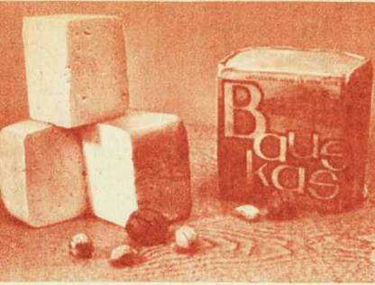
Сыр бауский
Созревает этот сыр всего 2 месяца (советский 3 месяца), что позволяет на тех же площадях увеличить выпуск продукта, пользующего повышенным спросом. Вырабатывается на Алтае.
Брынза. Самый распространенный рассольный сыр, пользующий большой популярностью. Брынзу можно приобрести в магазинах многих городов, далеко от тех мест, где ее впервые начали изготовлять. Производство брынзы организовано сейчас почти во всех союзных республиках. Больше всего ее вырабатывают в Азербайджане и Армени в южных районах РСФСР и Украины.
Брынзу можно назвать национальным продуктом и болгар, и румун, значительное количество ее изготовляется в Венгрии и Югославии.
Раньше брынза была грубовата, и многие потребители, в частности жители центральных районов, предпочитали менее острую и более нежную по консистенции болгарскую. Затем технологию брынзы ycoвершенствовали и качество ее значительно улучшилось.
Брусок с квадратным основанием 11х11 см, высотой 9 см, массой 1,2–1,5 кг, без корки, с ровной поверхностью белого цвета — такой внешний вид брынзы. Брусок может быть разделен на две части по диагонали. Вкус брынзы чистый, кисломолочный, в меру соленый (количество соли не превышает 4,5 %, в других рассольных сырах оно може достигать 7 %). Тесто брынзы нежное, умеренно плотное, слегка ломкое. На разрезе поверхность гладкая с небольшим количеством пустот, щелей, глазков.
В брынзе содержится не менее 50 % жира, не более 53 % влаги. Срок ее созревания 20 дней.
В настоящее время большая часть брынзы вырабатывается из коровьего молока. Раньше для производства ее использовалось главны образом овечье молоко.
Область применения брынзы в рационе довольно широка. Особенно привлекательны блюда южан, в которых она сочетается со свежими овощами.
Буджакский. Сыр имеет кисломолочный, слегка острый вкус, нежное, пластичное тесто, допускается небольшая ломкость, на разрезе — отдельные глазки круглой, овальной или угловатой формы, но их может и не быть.
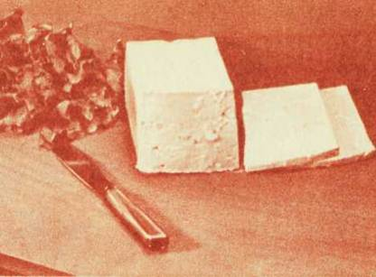
Брынза
Представляет собой брусок с квадратным основанием (размер стороны 23–24 см), высотой 8–9 см, массой 5–6 кг. Выпускается в продажу в возрасте 15 дней, на сорта не разделяется. Вырабатывается в Молдавии. В сыре содержится 55 % жира, 50 % влаги, 2–3 % соли.
Буковинский. Относится к мелким твердым сырам. Технология разработана на Украине, где выпуск его составляет около 7 тыс. т. Производят этот сыр также в РСФСР, Литве, Белоруссии.
Буковинский сыр поступает в продажу в виде высокого цилиндра (диаметр 12–14, высота 40–45 см, масса 4–6 кг) и прямоугольного бруска (длина 24–30, ширина 12–15, высота 9—12 см, масса 2,5–6 кг). Жира в нем содержится 45 %, влаги 44, соли 2,5 %.
Вкус и запах сыра умеренно выраженные сырные, слегка кисловатые; тесто нежное, пластичное; рисунок в виде глазков круглой, овальной или неправильной формы разного диаметра. Созревает он в течение 30 дней, на сорта не разделяется.
Валмиерский. Вырабатывается в Латвии. По внешнему виду это небольшой, немного удлиненный цилиндр массой до 1 кг. Созревает в течение 45 дней. Вкусовые особенности его типичны для сыра типа голландского. Содержание жира 45 %, соли не более 3 %. На сорта не разделяется.
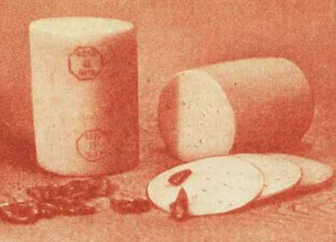
Сыр валмиерский
«Волна» (пл.) При изготовлении этого пастообразного плавленого сыра наряду с голландским, костромским, ярославским сырами применяется острый (латвийский и др.), что придает ему слегка аммиачный привкус. Этот сыр острее «Дружбы» и «Лета». Остальные показатели те же: жира 55 %, влаги 52, соли 2 %.
Восточный. Этот новый твердый сычужный сыр подобен качкавалу, который ведет свою родословную со времен Древнего Рима и сейчас пользуется большой популярностью, в частности, в Болгарии и ряде других стран восточной Европы. С точки зрения технологии он в какой-то степени близок к чеддеру: сырная масса также подвергается так называемой чеддеризации, выдержке при определенной температуре для усиления действия молочнокислой микрофлоры, вносимой в молоко в виде закваски. Еще одной особенностью технологии является плавление измельченной сырной массы в хорошо нагретом растворе поваренной соли. Выработка восточного сыра впервые была организована на Алтае сейчас его выпускают также в Азербайджане и Молдавии.
Это низкий цилиндр диаметром 26–32, высотой 11–14 см, массой 6–9 кг, покрытый полимерной пленкой. Вкус и запах умеренно выраженные сырные, с привкусом пастеризации, тесто пластичное, допуск ется легкая мучнистость и слоистость. Рисунка, как правило, нет. Содержание жира 45 %, влаги 43–46 %, соли до 2,5 %. Срок созреванс 45 суток. На сорта не разделяется.
Выруский. Подобен российскому сыру, но жирность его ниже — 30 %. Относится к полутвердым сырам. Вкус его слабовыраженный сырный кисловатый; тесто пластичное, слегка ломкое при изгибе; неравномерный рисунок состоит из глазков угловатой и щелевидной формы, внешнему виду это низкий цилиндр диаметром 34–36, высотой 12–16 см, массой 11–15 кг. Влаги в нем содержится 49–51, соли 1,5–2 %. Срок созревания 45 суток. На сорта не разделяется.
Вырабатывают его в Эстонии (здесь он и получил свое название имени города Выру, в котором находится крупный сыродельный комбинат страны), а также в РСФСР и Белоруссии,
Геленджикский. Этот свежий мягкий сыр вырабатывают на Северном Кавказе. Небольшие прямоугольные бруски его массой 0,5 и 1 кг без корки имеют белый или слегка кремовый цвет. Нежное, слеги ломкое тесто отличается приятным кисломолочным вкусом и запахом.
В сыре содержится не менее 50 % жира, не более 62 % влаги, 1 % соли. Он может выпускаться и со специями. Поступает в магазин через сутки после выработки.
«Голландский» (пл.). Основным сырьем для его выработки являются голландский, костромской и некоторые другие сыры этого типа, а так же небольшое количество нежирного сыра. В рецептуру входит сливочно масло. Вкус и запах сыра выраженные сырные, слегка кислсватые, консистенция пластичная, немного упругая. Жиров в нем содержится 45 % влаги 51, соли 2,5 %.
Голландский брусковый. Отличается от голландского круглого (см. ниже) не только формой (прямоугольный брусок со слегка округленными гранями и выпуклыми боковыми поверхностями), но и другим свойствами. Вкус его менее острый, консистенция более нежная, жира в нем меньше (45 %), влаги немного больше (44 %). Тесто украшают разной формы глазки.
Различают сыр большого и малого размера. Длина большого бруска до 30, ширина до 1 5 и высота до 12 см, масса 5–6 кг. Размеры малого бруска соответственно 18, 12 и 8 см, масса 1,5–2 кг.
Голландский круглый. Этот сыр известен в нашей стране примерно 150 лет. Его путь начался с помещичьих сыроварен, затем он стал продуктом артелей, а потом и полупромышленных предприятий. Перед революцией его изготовляли в Ярославской, Костромской, Рязанской, Смоленской, частично в Тверской, Новгородской, Владимирской губерниях, на Кавказе; позже, чем в других районах, производство этого сыра было организовано в Сибири.
Русские мастера-умельцы, освоив пришедшую из Голландии технологию эдамского сыра и затем усовершенствовав ее, стали вырабатывать продукт, который на международном рынке не без успеха конкурировал с сыром из самого г. Эдама.
Изменения, внесенные в производство в старое и советское время, позволяют говорить о своеобразии технологии голландского сыра в нашей стране. А то, что за ним оставалось старое название, объясняется, по-видимому, желанием сохранить непрерывность его истории и привязанность покупателей.
Голландский сыр — один из наиболее популярных. Вкус и аромат его, как говорят специалисты, чистые, выраженные сырные, свойственные данному сыру, с остротой и легкой кисловатостью, очень приятные. Тесто пластичное, и если ломтик сыра подчас ломается при изгибе, то это вовсе не недостаток. Хороший голландский сыр на разрезе имеет рисунок из глазков круглой, слегка сплюснутой или угловатой формы. В продажу он поступает в возрасте не менее 2,5 месяца, но дольше выдержанный обладает более выраженным и острым вкусом, а глазки его бывают подчеркнуты аппетитно поблескивающей слезой. Тонкую корку покрывают парафином. Это единственный сыр, имеющий форму слегка удлиненного или сплюснутого шара высотой 10–16, диаметром 13–15 см. Масса головки 2–2,5 кг.
Голландский круглый сыр содержит 50 % жира, т. е. больше, чем многие другие сыры этой группы, примерно 43 % влаги. Количество соли в нем больше, чем в сырах типа швейцарского, и оно достигает 3,5 % — это играет свою роль в образовании острого вкуса.
Голландский круглый сыр сейчас вырабатывается в ряде республик, в РСФСР производство его наиболее распространено в Костромской области.
Голландский «лилипут». Шарик, напоминающий небольшое ядро, Диаметром до 8 см, массой до 0,5 кг. Положить его рядом с кругом Швейцарского сыра — и название тотчас будет оправдано.
В сыре «лилипут» содержится столько же жира, влаги и соли, сколько, и в голландском круглом. И вкусом, и консистенцией «лилипут» почти не отличается от голландского. Но «поспевает» он быстрее — через 35 дней после выработки поступает в продажу, т. е. на 40 дней раньше, чем его крупный собрат.
Нарезанная от центра дольками головка этого сыра украсит любой закусочный стол.
Горный. Этот новый сыр относится к группе крупных твердых, как Советский и другие. Особенности его в том, что он обогащен микроэлементами — марганцем, кобальтом, цинком, медью и созревает всего за 2 месяца.
Вырабатывают сыр в виде бруска длиной 36–39, шириной 16–17 высотой 12–13 см, со слегка срезанными гранями и выпуклыми бока выми поверхностями, массой 7,5–9 кг. Вкус сыра выраженный сырный слегка пряный; тесто плотное, пластичное; рисунок в виде глазков круглой или овальной формы, разной величины, но его может и не быть. В сыре содержится 50 % жира, 40 % влаги, 1,3–1,6 % соли. На сорта не разделяется. Вырабатывается на Алтае.
Городской. Мягкий сыр, выпускается в продажу без созревания. Имеет вид прямоугольного бруска массой 0,1, 0,25 и 0,5 кг.
По внешнему виду это мягкая сырная масса с чистым кисломолочный вкусом, с нежным тестом белого или слегка желтоватого цвета. В нея содержится 40 % жира, 62 % влаги, 1 % соли. Вырабатывается на Украине.
«Городской» (пл.). При выработке этого плавленого сыра используется в основном нежирный сыр и в меньшем количестве — жирный типа голландского.
Вкус сыра острый, с легкой кисловатостью, тесто пластичное, даже немного мажущееся, цвет от белого до светло-желтого. Содержание жира 30 %, соли 2,5 %, фасуют его в алюминиевую фольгу по 100 г.
Грузинский. Технология этого сыра разработана грузинскими учеными, и вырабатывается он только в Грузии.
Низкий цилиндр диаметром до 28 см, высотой до 12 см, массой 4–6 кг.
Грузинский сыр обладает основными признаками типичного рассольного. В нем содержится 40–50 % жира, до 50 % влаги, от 4 до 7 % соли. В отличие от других рассольных сыров он имеет слегка кисловатый вкус и более нежную консистенцию. Это объясняется тем, что созревает он не в водном рассоле, а в рассоле, приготовленной на молочной сыворотке.
Даугава. Сыр, обладающий кисломолочным вкусом, нежным, мягкия тестом с рисунком, состоящим из неравномерно распределенные глазков неправильной формы.
В сыре содержится 30 % жира, 50 % влаги, 2,5 % соли. Созревает он не менее 25 дней и должен быть реализован в течение 15 дней. Поверхность его парафинируется.
Сыр даугава вырабатывается в форме прямоугольного 6pycка длиной до 20 см, массой до 1,5 кг. Выпускается в Латвии.
Днепровский. Мягкий сыр, реализуемый без созревания. Завернутый в пергамент прямоугольный брусочек его имеет массу от 1.5 до 2 кг. Вкус и запах сыра кисломолочные, консистенция нежная, цвет белый с кремовым оттенком. Жирность — 40 %, влажность — 62 %. Вырабатывается на Украине.
Днестровский. Отличается от других сыров группы голландского костромского более нежным тестом, что объясняется в значительной степени повышенным содержанием влаги (48 %), а также слегка кисла молочным вкусом и меньшим количеством соли (не более 1,5 %). Жирность сыра 50 %. По внешнему виду это парафинированный или завернутый в пленку прямоугольный брусок длиной до 35, шириной до 12 и высотой до 9 см. Масса его 3–5 кг. Созревает этот сыр в течении 40 дней. Вырабатывается на Украине.
Домашний. Этот продукт широко распространен в ряде стран, в частности в США, где он называется cottage cheese. Подобный продукт вырабатывается и в нашей стране в довольно большом количества Специалисты не относят его к сыру, и тем не менее несколько слов сказать о нем стоит.
Домашний сыр — оригинальный продукт, отличающийся как от обычного сыра, так и от творога. Он состоит из достаточно крупных и плотных зерен белка, полученного из обезжиренного молока. По вкусу он напоминает нежирный творог, но кислотность его меньше (если в обычном твороге допускается кислотность не выше 225°, то в зерненом она не превышает 150°). Соли в нем содержится не более 1 %.
Обычно заводы вырабатывают домашний сыр со сливками. В домашних условиях его можно подавать к столу, добавив к нему фрукты или овощи. Получается вкусное блюдо, и не только вкусное, но и питательное — в продукте 16–17 % молочного белка и до 20 % жира.
Значительная часть этого сыра выпускается в стаканах на 500 г.
Дорогобужский. Типичный представитель своей группы, он очень близок к лимбургскому сыру, упоминаемому в пушкинских строках.
Выпускается в продажу в виде брусков, по форме близких к кубу, упакованных в пергамент и фольгу.
За обеденным столом вы снимаете красочную этикетку, опоясывающую брусочек сыра, затем фольгу, пергамент и обнаруживаете желтоватую или красновато-коричневую поверхность. Это и есть подсушенная слизевая масса, покрывающая тонкую, мягкую, но достаточно прочную корочку сыра. Специфический, слегка аммиачный запах уже чувствуется довольно сильно. Счищаете ножом слизевую массу и нарезаете ломтики сыра. На ломтиках светло-кремового цвета — небольшое количество глазков неправильной формы. Вкус действительно острый, пикантный, необычный. Сыр тает во рту, его можно намазать на хлеб.
Сыр в меру соленый — содержание соли не превышает 3,5 %. Жирность его не менее 45 %, влажность 44–46 %. В продажу он поступает в возрасте 45 дней. В центре бруска сыра можно обнаружить небольшое творожистое ядро, что не является дефектом.
Дорожный. Отличается от других представителей группы пикантных сыров умеренно острым, слегка кисловатым вкусом с очень слабым аммиачным запахом. Тесто нежное, маслянистое.
Это низкий цилиндр диаметром 17–13 см, высотой 6–8 см, массой 1,5–2,2 кг. Незначительное количество глазков или полное отсутствие их — не дефект, а характерная особенность дорожного сыра. В нем содержится 50 % жира, 2,5 % соли. Выпускается в продажу в возрасте 30 дней.
Те, кому дорогобужский или смоленский сыры покажутся очень острыми, могут начать знакомство с мягкими пикантными сырами с дорожного сыра.
А потребителям, предпочитающим сыры с меньшей степенью пикантности или сыры пониженной жирности, можно рекомендовать рамбинас.
«Дружба» и «Лето» (пл.). В рецептуре их — сыры крупные (советский, швейцарский) и мелкие (голландский, костромской и ярославский), а также сметана и сухие сливки. Но вкусом эти пастообразные сыры различаются: сыр «Дружба» имеет слегка пряный вкус, свойственный советскому и швейцарскому сырам, «Лето» — выраженный привкус и аромат укропа и тмина, поскольку при его выработке используется вытяжка из зелени или семян этих пряных растений. Поэтому и цвет его с фисташковым оттенком. Содержание жира составляет 55 %, влаги 52 %, соли 2 %. Фасуют их в фольгу или полистироловые коробочки по 62,5 и 100 г.
Ехегнадзорский. Специалисты относят этот сыр к разновидности бурдючных и горшечных сыров, о которых упоминалось ранее. В Армении усовершенствовали кустарные приемы их изготовления и создали промышленную технологию, по которой вырабатывается, в частности ехегнадзорский сыр.
Он представляет собой сначала измельченную и перемешанную с дикорастущими пряными травами (местные названия у р ц и с о х у к), а затем уплотненную в монолит сырную массу белого цвета с желтоватым оттенком. Вкус сыра острый с привкусом и ароматом пряных трав.
В нем содержится 45 % жира, не более 44 % влаги, 4–5 % соли. Сыр созревает в течение 3 месяцев. В магазинах его продают на развес из ящиков, куда плотно набивают, или порциями в полиэтиленовых пакетах.
Зеленый. Этот сыр относится к отдельной группе, поскольку характеризуется своеобразием и сырья, и технологии, и вкусовых свойств. Пожалуй, единственный сыр, цвет которого не имеет ничего общего с цветом молока (есть, правда, голубой, однако цвет его все же бело-желтоватый, если не считать голубоватых прожилок плесени, пронизывающих тесто). Но главная его особенность в том, что наряду с острым сырным вкусом он имеет необычный для сыра аромат, сообщаемый ему редким в нашей стране растением — голубой тригонеллой. Высушенные и растертые листья ее добавляют в сырную массу, которой они передают свой особый запах.
Зеленый сыр — концентрат обработанного специальным образом молочного белка. Делают его из обезжиренного молока. Это лишний раз подчеркивает, что вкусные молочные продукты можно приготовит и без жира. Имеющийся в обезжиренном молоке белок выделяют, прессуют и затем выдерживают 1–1,5 месяца. Получается полуфабрикат — так называемый цигер.
Созревший цигер растирают, добавляют в него соль и остро пахнущий порошок травянисто-зеленого цвета, приготовленный из голубой тригонеллы. Сырную массу, которая уже приобрела зеленый цвет подсушивают и затем придают ей форму небольших усеченных конусов. Эти маленькие сырки выдерживают для сушки и созревания, после чего они приобретают характерные вкус, остроту и аромат.
Зеленый сыр хорошо размельчается на терке, в ступке или в кофейной мельнице и превращается в мучнистый порошок. Выпускается он и в виде порошка.
Попробуйте пересыпанные зелеными крупинками этого сыра макароны или бутерброд с зеленой пыльцой на кремовом слое масла. Между прочим, этот сыр хорош и к супу, и с картофелем. Он не разделяется на сорта.
Земгальский. Низкий прямоугольный брусок этого мягкого сыр имеет нежное тесто кремового цвета, на разрезе — гладкая поверхность с незначительным количеством мелких пустот.
Вкус и запах сыра кисломолочные. Жира в нем содержится не менее 50 %, влаги не более 50 %, соли — до 2,5 %.
Сыр созревает относительно быстро — всего 15 дней. В магазин поступает покрытым парафиновой смесью. Срок реализации сыр (с момента выпуска с предприятия) 15 дней. Вырабатывается в Латвии.
«Золушка» (пл.). Сладкий сыр, вырабатываемый из несоленого жирного и нежирного сыра, творога, сухого молока и сливочного масл с сахаром и цикорием. Вкус сыра сладкий, молочный, с выраженный привкусом и ароматом цикория, консистенция нежная, пластична цвет от светло-коричневого до коричневого. Жирность сыра 20 %, влажность 44 %, содержание сахара 20 %.
Имеретинский. По внешнему виду этот рассольный сыр представляет собой низкий цилиндр (диаметр 10–16, высота 2–4 см, масса 0,5–1 кг) или прямоугольный брусок (длина 20, ширина 10, высота 5–6 см, класса 1–1,5 кг). Вкус сыра чистый молочный, с легкой кисловатостью, тесто однородное, плотное и упругое, от белого до слабо-желтого цвета. На разрезе — глазки различной формы, но их может и не быть.
В сыре содержится 45 % жира, не более 48 % влаги, не более 4–5 % соли, т. е. меньше, чем в других рассольных сырах.
Имеретинский сыр часто выпускается в продажу в возрасте 10–15 дней, сразу после посолки, и пользуется большим спросом благодаря приятному, в меру острому вкусу.
Этот сыр вырабатывается в Грузии, причем не только на государственных сыродельных заводах, но и в домашних хозяйствах.
Иремшик. Этот продукт, конечно, не отвечает требованиям типичного сыра. Но он чем-то напоминает продукт, который вырабатывали в далекие времена. И мы не удержались от того, чтобы кратко не рассказать о нем.
Коровье, овечье или козье молоко, как и при производстве обычного сыра, свертывают сычужным ферментом. Но остальные приемы производства своеобразны. Сгусток кипятят до полного удаления свободной влаги. Получается масса коричневого цвета, которую измельчают на кусочки и сушат до тех пор, пока количество влаги не уменьшится до 15 %.
Готовый иремшик представляет собой коричневые довольно твердые кусочки высушенной молочной массы различной формы. Вкус его молочный, сладковатый, с привкусом топленого молока.
Технология иремшика разработана на основе национальных блюд. Выпускается предприятиями Казахстана.
Кабардинский копченый. Низкий цилиндр (диаметром до 22 см, высотой до 6 см и массой до 2 кг) с морщинистой поверхностью коричнево-красного цвета, на которой отчетливо видны следы прутьев. Сырную массу выкладывают для формования не в металлические формы, а в плетеные корзины. Коричнево-красный цвет корки — результат копчения сыра.
Вкус и запах кабардинского сыра острые, слегка кисловатые, с ярко выраженным привкусом и запахом копчения. Тесто плотное, эластичное, но возможна легкая крошливость. На разрезе сыра — множество глазков неправильной формы.
Содержание жира 45 %, влаги не более 40 %, соли 3–5 %. Сыр созревает не менее 25 дней.
Карпатский. Любители швейцарского и советского сыров могут включить в свой ассортимент и близкий к ним карпатский. Вкус сыра сладковатый, с выраженным ароматом; тесто нежное; рисунок — глазки круглой или овальной формы. В карпатском сыре содержится 50 % жира, не более 42 % влаги, а соли в нем всего 1,5 %.
Впервые был выработан в Станиславской области, в районе Карпатских гор, поэтому так и называется. При производстве его применяют специальную закваску, которую вносят в пастеризованное молоко. Созревает он значительно быстрее некоторых других крупных сыров и в возрасте 2 месяцев поступает в продажу.
По внешнему виду это низкий цилиндр со слегка выпуклой боковой Поверхностью. Выпускается массой 50 кг (высота 13–15, диаметр 58–60 см) и 12–15 кг (высота 10–13, диаметр 32–35 см).
Каунасский. В отличие от латвийского и других сыров этой группы каунасский имеет менее острый, слегка кисловатый вкус, но легкий аммиачный запах в нем чувствуется. Консистенция сыра мягкая, упругая, иногда немного мажущаяся, на разрезе — глазки различной форм Низкий цилиндр диаметром до 20 см, массой до 2,5 кг покрывается парафиновой смесью. В сыре содержится 30 % жира, не более 53 % влаги, до 3 % соли. Созревает он не менее 35 дней.
Кименю. Сыр, обладающий приятным кисломолочным вкусом с ясно выраженным привкусом и запахом тмина. Мягкое тесто его доволь интенсивного желтого цвета с темными крапинками тмина. По этим признакам его легко обнаружить на прилавках магазинов.
Вырабатывается из творога, к которому добавляют молоко, слив яйца и, конечно, тмин. В сыре содержится 20 % жира, 1,5 % соли. Форма — низкий цилиндр.
Реализуется в свежем виде. Хранить его можно не более 10 дней при температуре от +1 до —2 °C. Выпускается в Латвии.
«Кисломолочный» (пл.). В приятном сырном вкусе его кисловатосл чувствуется больше, чем в любом другом плавленом сыре. Ее сообщая молочнокислая закваска, которую вносят в сырную массу в сравнительно большом количестве (примерно 10 %). Это, пожалуй, единственный плавленый сыр с такой добавкой. Консистенция его нежная, зластичная, но плотнее, чем, например, «Дружбы», цвет от светло-желтого до желтого.
В сыре содержится 45 % жира, 55 % влаги, 2 % соли. Фасуют его по 30, 62,5 и 100 г.
Клинковый. Это представитель тех сыров, которые издавна изготовлялись в крестьянских хозяйствах. Место происхождения клинкового сыра — Белоруссия. Он имеет клинообразную форму, поэтому и называется клинковым. Вырабатывается как из цельного молока, так и из смеси обезжиренного молока и пахты.
Вкус сыра приятный, кисломолочный, он может быть несоленым в меру соленый (до 2 % соли). Однородное тесто сыра хорошо режется ножом, не крошится.
Жирность сыра 30 %, влажность 64 %.
Клинковому сыру можно придать пикантность, добавив в сырную массу тмин, душистый перец или другие вещества со своеобразным вкусом и ароматом.
Сыр поступает в продажу в свежем виде после посолки и обсушки. Масса его 0,5–1 кг.
Кобийский. Вырабатывается в основном на Северном Кавказе и обладает всеми качествами типичного рассольного сыра. По внешнем виду это два усеченных конуса, соединенных основаниями. Масса сыра 4–6 кг. Жирность 40–50 %, влажность до 50 %, содержание соли от 4 до 7 %.
Отличительной особенностью кобийского сыра является поверхность со складками, которые образуются в результате формована сырной массы в плетеных корзинах.
«Колбасный копченый» (пл.) Рецептура этого сыра включает жирный сычужный сыр, а также специальный для плавления сыр жирностью 40 % и нежирный, брынзу, творог, сливочное масло. Выпускаете в виде батонов в оболочке из кутизина, полимерных пленок, пергамента или целлофана. Этот сыр отличается острым вкусом с привкуса и ароматом копчения. Консистенция в меру плотная, слегка упругая. Жирность 30 и 40 %, влажность соответственно 55 и 52 %, содержание соли 3 %. Масса сыра 2 кг.
«Колбасный копченый особый» (пл.) По составу белковых и жировых компонентов, содержанию влаги и соли этот сыр аналогичен особому (см. «Особый»). Фасованный в целлофановую, кутизиновую, полимерную или пергаментную оболочку в виде батонов массой до 2 кг, этот сыр коптят, в результате чего он приобретает своеобразный привкус копчения.
«Колбасный копченый с перцем»(пл.). Некоторые заводы, в частности Ростовский, вырабатывают колбасный копченый сыр с перцем. По основным показателям он не отличается от обычного колбасного, но в остром вкусе его хорошо чувствуется привкус перца.
«Колбасный копченый с тмином» (пл.). В набор продуктов для плавления входят голландский, костромской, пошехонский, ярославский, степной и эстонский сыры, а также нежирный, сливочное масло, тмин в виде либо зерен, либо масляной или спиртовой вытяжки. Вкус сыра острый, с привкусом копчения и тмина. Выпускается в виде батонов массой 2 кг. Жирность 40 %, влажность 55 %, содержание соли 3 %.
«Коралл»(пл.). На крышке белой полистироловой коробки — изображение рачка. Из него изготовляется специальная паста, которая в замороженном виде поступает на заводы и в цехи плавленых сыров. Здесь сыр сочетается с продуктом морей, и получается пикантный обогащенный дополнительным количеством белка деликатесный продукт.
В рецептуре пастообразного сыра «Коралл» — советский, алтайский, голландский, костромской и другие жирные сыры, сливки, являющиеся основным жировым компонентом, и 10 % белковой пасты «Океан». Для пикантности добавляется черный молотый перец. Чтобы улучшить структуру продукта, расплавленную массу гомогенизируют.
Вкус сыра «Коралл» сырный, слегка пряный, с привкусом пасты и черного перца, консистенция нежная, мажущаяся, цвет теста бледно-розовый с вкраплениями пасты и черного перца.
В «Коралле» содержится 60 % жира, 52 % влаги, не более 2 % соли, Сыр фасуют в коробочки массой по 250 г.
Костромской. Назван так по району, где в свое время его вырабатывали больше, чем в других местах. Он частый гость на домашнем столе — его знают и любят. В этом большая заслуга ученых и мастеров, много сделавших для совершенствования технологии и улучшения качества костромского сыра, производство которого было начато в нашей стране примерно 100 лет назад.
За рубежом сыр подобного типа известен под названием гауда.
Костромской сыр близок к голландскому, но отличается вкусовыми и другими свойствами. Консистенция его более нежная, пластичная, вкус менее острый, иногда слегка сладковатый. В нем содержится не менее 45 % жира, не более 44 % влаги, до 2,5 % соли. Рисунок сыра состоит из равномерно расположенных круглых и слегка сплюснутых глазков.
По форме костромской сыр — низкий цилиндр со слегка выпуклыми боковыми поверхностями и округленными гранями (верхняя и нижняя поверхности также могут быть выпуклыми). Вырабатывается этот сыр, как и голландский брусковый, двух размеров: большой цилиндр — высота 10–12, диаметр 32–36 см, масса 9—12 кг; малый — соответственно 8—10, 26–28 см, 5–6 кг.
Костромской сыр обоих размеров поступает в продажу в возрасте 2,5 месяца.
«Костромской» (пл.). Основными белковыми компонентами его является костромской, голландский и другие подобные им сыры и в небольшом количестве также нежирные. Добавляется сухое цельное молоко.
Вкус сыра соответствует вкусу костромского сычужного сыра, т. е. слегка кисловатый, консистенция пластичная, в меру упругая.
Содержание жира в нем составляет 40 %, влаги 52 %, соли 2,5 %.
«Кофейный»(пл.). Этот сладкий сыр имеет вкус и аромат кофе. В рецептуру его входит примерно 6 % экстракта кофе. Жирность сыра 30 %, влажность 35 %, содержание сахара 25 %.
Крестьянский. Новый мягкий сыр. При выработке его в горячее молоко или пахту вместе с закваской добавляют полужирный или нежирный творог, а в полученную сырную массу вводят сливочное масло или сливки. Получается своеобразный продукт, который без созревания направляют в магазины.
Имеет форму батона, плотно обтянутого целлюлозной или полимерной пленкой, массой 0,5–1,2 кг. Вкус сыра кисломолочный, тесто однородное, нежное, но в достаточной мере плотное. В нем содержится 30 % жира, 58 % влаги, 1–2 % соли.
Вырабатывают этот сыр (также с тмином и топленый) в основной в Литве.
Латвийский. Наиболее типичный и распространенный представитель группы. Его легко отличить не только по форме небольшого с квадратным основанием бруска (длина стороны 16–17, высота 7–9 см, масс до 2,5 кг), но и по необычной поверхности, покрытой тонким слоем подсохшей сырной слизи. Сказать, что вкус и запах его острые, недостаточно, поэтому специалисты для полноты характеристики этого сыра ввели понятие «слегка аммиачные». Такие вкус и запах получаются в результате глубокого биохимического процесса, происходящего в сыре.
Отличительная особенность сыра — более нежное, чем у твердых сыров, тесто, что объясняется особенностью технологии и несколько повышенным содержанием влаги — 48 % (в швейцарском 42 %, в голландском 43–44 %). Латвийский сыр, как пикантный и некоторые другие может быть отнесен к полутвердым сырам.
Жирность сыра не менее 45 %. По содержанию соли он соответствуй голландскому сыру (2–3,5 %). Рисунок состоит из глазков овальной и неправильной формы.
В продажу сыр поступает в возрасте 2 месяцев, завернутый либо в пергамент, либо в фольгу, целлофан или другую пленку с красочно этикеткой.
«Латвийский» (пл.). Хотя в его рецептуре мелких сычужных сыров — голландского, костромского и других, как правило, больше, чем острых типа латвийского, во вкусе, в меру остром, чувствуется аммиачньый привкус. Консистенция сыра по сравнению с другими сырами группы видовых более пластичная и даже немного мажущаяся.
В сыре содержится 40 % жира, 52 % влаги, 2,5 % соли.
«Лето» (пл.). См. «Дружба».
Лиманский. Этот сыр, технология которого разработана на приятиях Одесской области, получил широкое распространение Украине. Напоминающий брынзу, он имеет приятный кисломолочный, в меру соленый вкус (содержание соли не превышает 2 %). Консистенция его нежная, слегка ломкая, но не крошливая; цвет белый или желтоватый. Эти признаки лиманский сыр приобретает через 5–7 дня, поэтому его можно реализовывать, как говорят, в свежем виде.
В лиманском сыре содержится 50 % жира и 55 % влаги.
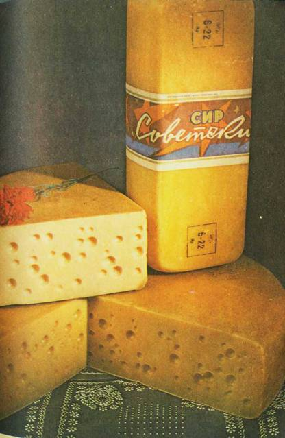
Сыры швейцарский и советский
Литовский. Прямоугольные бруски этого сыра длиной до 30 см массой 5–6 кг выпускаются в продажу покрытыми парафиновой смесью или завернутыми в пленку. Плотное, слегка ломкое тесто кремового цвета имеет кисловатый вкус. На разрезе сыра — глазки различной формы (но их может и быть).
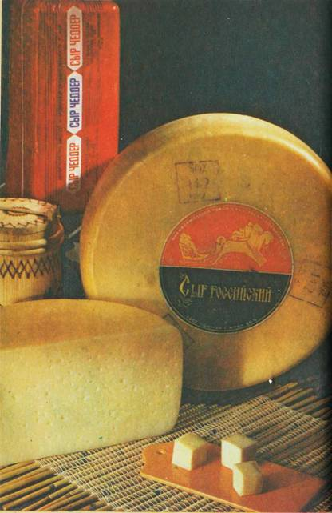
Сыр российский и чеддер
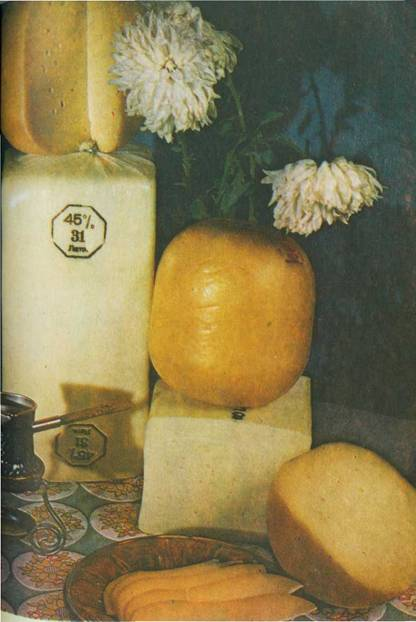
Сыр голландский — круглый и брусковый
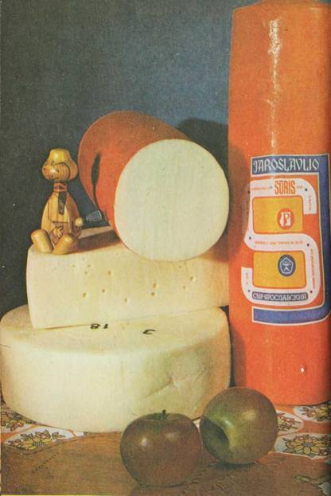
Сыры костромской и ярославский
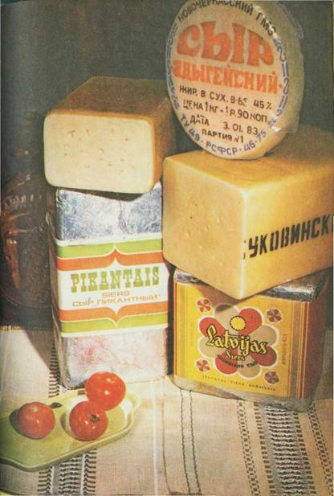
Сыры пикантный и латвийский, угличский, буковинский и адыгейский
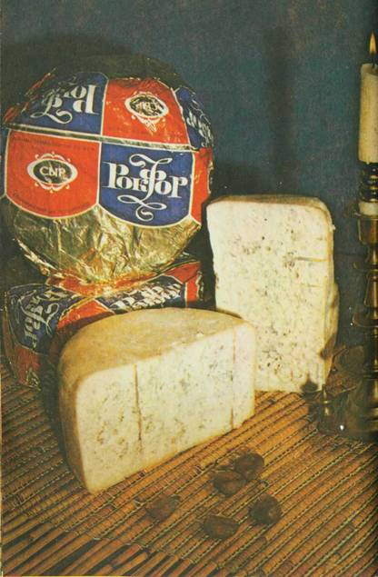
Сыр рокфор
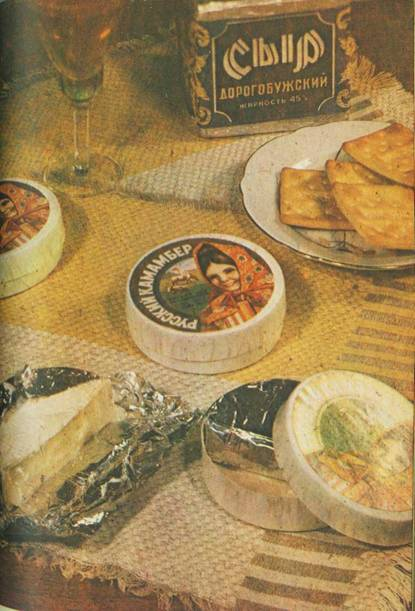
Сыры русский камамбер и дорогобужский
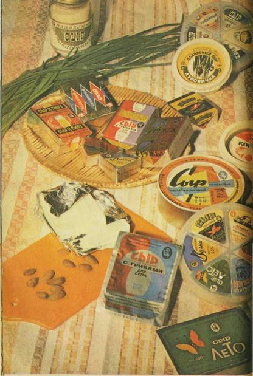
Плавленые сыры
В сыре содержится не менее 30 % жира, не более 52 % влаги, до 3 % соли. Созревает он не менее 45 дней.
Литовский тминный. По внешнему виду это треугольный брусок с закругленными гранями и углами (длина основания до 24 см, сторон — 19 см, высота до 10 см). Весит брусок до 2,8 кг. Через тонкую корку, покрытую парафином, просвечивают зерна тмина. Они украшают разрез сыра, равномерно распределяясь по всей его светло-желтой массе. Рисунок сыра — глазки овальной или неправильной формы — как бы дополняется коричневыми зернами тмина.
Эластичное тесто сыра имеет острые, тминные, слегка аммиачные вкус и запах. В какой-то степени этот сыр напоминает мягкий типа пикантного, но отличается от него меньшей остротой.
Тминный сыр содержит 45 % жира, не более 47 % влаги, 2–3 % соли и до 1 % тмина.
Созревает не менее 2 месяцев и должен быть реализован в течение не более 30 дней с момента выпуска предприятием. Каждый брусок сыра завертывают в пергамент, целлофан или полимерную пленку, которые могут быть украшены художественно оформленной этикеткой.
Лори. В Армении наряду с широко распространенным здесь чанахом и другими рассольными сырами широкое признание потребителей получил сыр лори, названный так по местности, где он впервые был выработан.
В отличие от других рассольных он созревает и хранится в полимерной пленке, в ней же поступает в магазины.
Прямоугольный брусок сыра массой до 5,5 кг не имеет корки. Вкус его в меру острый, соленый; консистенция нежнее, чем у других рассольных сыров, слегка ломкая; цвет белый со светло-желтым оттенком; рисунок составляют глазки различных формы и размеров.
В нем содержится не менее 45 % жира, не более 44 % влаги, до 5 % соли. Продолжительность созревания сыра до 40 дней.
Любительский. Реализуется в свежем и зрелом виде. Свежий сыр отправляется в продажу после посолки и обсушки. Вкус и запах кисломолочные, слегка острые; тесто нежное.
Зрелый сыр имеет тонкую, мягкую корочку, покрытую красновато-желтой слизевой массой и пятнами плесени белого цвета. Вкус и запах его острые, пикантные, с легким грибным привкусом, тесто нежное, мажущееся.
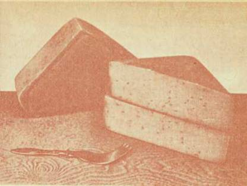
Сыр литовский тминный
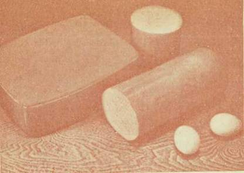
Сыры минский и эстонский
Имеет форму низкого цилиндра (диаметром до 15, высотой 4–7 см) или бруска с квадратным основанием (размер стороны 13–15 см, высота 4–7 см). Масса его — 1–1,5 кг.
В сыре содержится 50 % жира, 60 % влаги, 2,5 % соли.
Свежий любительский сыр пользуется спросом на Украине.
«Медовый» (пл.). Сладкий сыр, вырабатываемый из несоленого жирного и нежирного сыра, сливочного масла, творога, сухого молока с сахаром и медом. Вкус сладкий, с выраженным привкусом и ароматом пчелиного меда, консистенция пластичная, слегка мажущаяся, цвет от светло-кремового до кремового. В сыре содержится 30 % жира, 45 % влаги, 18 % сахара.
Минский. Широко распространен в Белоруссии. По объему производства занимает здесь четвертое место среди мелких твердых сыров. Относится к быстросозревающему сыру, поступает в продажу в возрасте 1 месяца.
По форме представляет собой прямоугольный брусок длиной до 26, шириной до 10 см, массой 2,5–3,2 кг. Обладает выраженными сырными вкусом и ароматом с легкой кисловатостью. Тесто его нежное, эластичное. Рисунок состоит из глазков неправильной формы.
В минском сыре содержится 30 % жира, не более 48 % влаги, 1,5–2,5 % соли. На сорта не разделяется. Иногда появляется в магазинах Москвы.
Моале. Свежий мягкий сыр, вырабатываемый в Молдавии. Характеризуется чистым кисломолочным, в меру соленым вкусом, нежным, слегка ломким тестом. Цвет его молочный (до светло-соломенного),1 корка отсутствует.
Жирность сыра 45 %, влажность 58 %, содержание соли 2 %.
Выпускается в форме цилиндра диаметром 12–15 см, высотой 7—10 см, массой 1,2–2 кг. Реализуется после посолки и обсушки.
Молдавский. Рассольный сыр в виде бруска длиной 26–30, шириной 13–15, высотой 10–12 см, массой 3,4–5,5 кг. Выпускается в продажу после посолки и обсушки в возрасте 5 дней упакованным в пленку или в бочках с рассолом. В нем содержится 40 % жира, 60 % влаги, 4 % соли. Корка отсутствует, поверхность чистая, ровная, вкус и запах чистые, кисломолочные; в меру соленый, слегка острый, тесто эластичное, немного ломкое, но не крошливое. Рисунок в виде глазков различной формы. На сорта не разделяется. Вырабатывается в большом количестве в Молдавии.
Мотал. Оригинальный рассольный сыр, относящийся к бурдючным, отсюда и его название (азербайдж.).
В отличие от других сыров он не имеет ни формы, ни размера, в виде сплошной массы выпускается в продажу в бочках (возможна упаковка в глиняную посуду и в бурдюки).
Посоленные головки сыра плотно набивают в бурдюки — овчины двух — и трехлетних баранов грубошерстной породы. Концы овчин завязывают, и в бурдюках сыр созревает в рассоле 3–3,5 месяца.
Мотал изготовляют из рассольных, голландского, швейцарского и других сыров, нередко добавляют пряности. Вкус мотала остросоленый (4–5 % соли), с легким привкусом сыра, из которого он выработан, или добавленных пряностей. Белое или слабо-желтое тесто мажущейся консистенции неоднородное. Небольшие кусочки и крупчатость не являются дефектом.
Жирность сыра 30 или 40 %, влажность 50 %.
Если спрос на этот сыр сохранится, то, несомненно, будут предложены более совершенные способы его производства.
«Мятный» (пл.). Сладкий сыр, вырабатываемый из несоленого жирного и нежирного сыра, творога, сухого молока, сливочного масла с сахаром, ванилином и мятной эссенцией. Вкус сыра сладкий, с выраженным привкусом и запахом мяты, консистенция пластичная, слегка мажущаяся, цвет — желтоватый. В нем содержится 30 % жира, 33 % влаги, 30 % сахара.
Нарочь. По имени озера в Белоруссии назван свежий мягкий сыр, вырабатываемый в этой республике. Завернутый в целлофан или пергамент низкий цилиндр его имеет массу 0,8–1,2 кг. Под тонкой, мягкой корочкой — нежное, маслянистое тесто бело-кремового цвета. Вкус сыра очень приятный, кисломолочный. Жирность 40 %, влажность не более 62 %. Сыр в меру соленый (2,5 % соли).
«Невский»(пл.). См. «Угличский» (пл.).
Нямунас. Сыр, подобный латвийскому и пикантному. Вырабатывается в Литве. Носит название главной реки Литвы — Немана.
По форме это низкий цилиндр диаметром до 20 см, массой 1,5–2 кг. Жирность сыра 50 %. Поверхность парафинирована. Во вкусе чувствуется легкая острота и аммиачность. На сорта не разделяется.
Латвийский, пикантный и нямунас — сыры острые, и по органолептическим показателям чем-то напоминают мягкие сыры.
«Омичка» (пл.). Сладкий сыр, вырабатываемый из несоленого сыра жирного и нежирного, сливочного масла, свежих сливок, сухого молока с сахаром и ванилином. Иногда в «Омичку» добавляют изюм или орехи. Вкус чистый, молочный, сладкий, с привкусом ванилина, орехов или изюма. Консистенция нежная, мажущаяся, с наличием частиц добавок (ореха или изюма), цвет светло-желтый. В сыре содержится 50 % жира, 40 % влаги, 16 % сахара.
«Орбита» (пл.). Вкус и запах сыра острые, кисловатые, консистенция в меру плотная, слегка упругая, жирность — 20 %, влажность — не более 60 %, содержание соли — 2 %. Сыр выпускается в виде секторов и прямоугольных брусков массой от 30 до 250 г. В рецептуру его входят преимущественно нежирные творог и сыр, но добавляются такие полножирные сыры, как голландский, ярославский и другие, цельное и обезжиренное сухое молоко, сливочное масло. Вырабатывается в РСФСР.
Осетинский. По вкусовым свойствам и составу этот рассольный сыр подобен чанаху и тушинскому. Форма его — цилиндр диаметром до 28 см и высотой до 17 см. Жирность 45 %, содержание соли до 7 %.
Вырабатывается осетинский сыр на Северном Кавказе.
«Особый»(пл.). Основными белковыми компонентами являются нежирный сыр с добавлением голландского, костромского и некоторых других. Наряду с молочным жиром, который включается в продукт с жирными сырами, сметаной, цельным сухим молоком, рецептурой предусмотрено введение столового молочного маргарина, представляющего концентрат высококачественного растительного жира. Вкус и запах сыра слегка кисловатые, в меру острые, консистенция в меру плотная, немного упругая. Жирность 30 %, влажность 55 %, содержание соли 2,5 %.
«Пастеризованный» (пл.). Жирных сычужных сыров — голландского, костромского, пошехонского и советского — в нем около 80 %, т. е. больше, чем в любом другом плавленом. Этим определяется выраженный сырный вкус продукта, в котором чувствуется легкая кисловатость и привкус пастеризации. В открытой банке под листком пергамента — ровная чистая поверхность с небольшим количеством воздушных пустот. Пластичное, слегка упругое тесто имеет кремовой цвет.
Жирность сыра 50 %, влажность 48 %, содержание соли составляет 2,5 %.
Пикантный. Средняя острота и легкая аммиачность во вкусе и запахе сочетаются с кисловатостью. Тесто его мягче, чем у других сыров этой группы (например, у латвийского), что объясняется способом производства и в какой-то степени повышенным содержанием жира (55 %).
В созревании его также принимает участие микрофлора, развивающаяся на поверхности. Но незадолго до готовности продукта слизь удаляют и сыр парафинируют. Этим приемом создатели пикантного сыра — ученые Всесоюзного научно-исследовательского института маслодельной и сыродельной промышленности — не только смягчили остроту продукта, но и увеличили срок его реализации без ущерба для качества. Тем не менее он по праву входит в группу сыров типа латвийского, и название его вполне оправдано. Кстати, вкус его мягче и благодаря пониженному содержанию соли (не более 2,5 %).
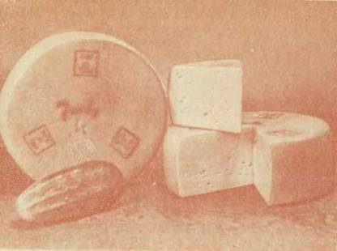
Сыр нямунас
В продажу пикантный сыр поступает завернутым в фольгу, а затем в бумагу, украшенную этикеткой.
Вырабатывают его в форме прямоугольного бруска двух размеров: большой (длиной до 28, шириной до 14, высотой до 11 см, массой 3–4 кг) и малый (длиной до 14, шириной до 10, высотой до 9 см, массой до 1 кг).
Большие бруски сыра поступают в продажу в возрасте 35–45 дней, малые — в возрасте 25–30 дней. На сорта сыр не разделяется.
Пошехонский. Один из сравнительно новых видов сыра, созданных учеными в содружестве с мастерами. Выработка его впервые была освоена в Ярославской области, и свое название он получил от Пошехонья — широко известной в нашей стране местности.
Этот сыр со слегка кисловатым вкусом подобен костромскому, но консистенция его более пластичная и нежная. Одна из основных особенностей пошехонского сыра состоит в том, что он созревает быстрее, чем голландский и костромской, — всего за 45 дней.
Жирность сыра 45 %, влажность не более 43 %, содержание соли составляет 1,5–2,5 %. Рисунок состоит из глазков круглой или слегка сплюснутой формы.
По внешнему виду это низкий цилиндр высотой 8—10, диаметром 26–28 см, массой 5–6 кг.
Многих покупателей привлекает в пошехонском сыре его нежная, пластичная консистенция.
На сорта этот сыр не разделяется.
Прибалтийский. Это низкий цилиндр диаметром до 28 см, массой 6–7 кг. Вкус сыра кисловатый, консистенция достаточно плотная и упругая.
Созревает прибалтийский сыр 45 дней. В нем содержится 20 % жира, до 55 % влаги, до 3 % соли.
Пярнуский. Дополняет ассортимент сыров, вырабатываемых в Эстонии. В нем содержится 30 % жира, до 2,5 % соли. Вкус сыра слегка кисловатый, тесто благодаря относительно высокому содержанию влаги (50 %) нежное, эластичное. Рисунок, если он есть, состоит из глазков разной формы.
По форме это цилиндр высотой 25–35, диаметром 8—10 см, массой 2–3 кг.
Сыр выпускается в продажу в возрасте 45 дней. На сорта не разделяется.
Пятигорский. Полутвердый сыр в виде бруска длиной 22–24, шириной 10–12, высотой 6–8 см, массой 1,6–2,5 кг. В нем содержится 50 % жира, 46 % влаги, 1,5–2 % соли. Корка его тонкая, мягкая, поверхность с отпечатками салфетки покрывается пленкой или парафиновым сплавом. Вкус и запах кисломолочные, тесто мягкое, однородное, слегка желтоватое, рисунок — в виде мелких глазков разной формы, но его может и не быть.
Сыр созревает 15 дней. На сорта не разделяется.
Рамбинас. Так называется гора в Литве. Сыр, носящий ее имя, необычен по форме: это шестиугольная призма высотой до 7 см и с расстояниями между гранями до 15 см; масса его достигает 1,5 кг. Рамбинас отличается от других пикантных сыров не только формой.
Вкус его менее острый и слегка кисломолочный. Тесто мягкое, эластичное, но более плотное, чем у типичных пикантных сыров.
Жирность сыра 30 %, соленость средняя (до 2,5 % соли). Созревает он в течение 35 дней.
Рамбинас пользуется большим спросом в Литве. Этот сыр бывает в магазинах Москвы.
Рокфор. Это один из старинных сыров. В литературных источниках, относящихся к I в., упоминается сыр, вырабатывавшийся в провинции Лозер, который высоко ценился в Риме. Предполагают, что речь шла о сыре, изготовляемом с плесенью. В монастырских хрониках VII в. указывается, что рокфор всегда привозили в Рим из-за Альп. Во всяком случае, точно установлено, что уже в средние века рокфор изготовляли вблизи деревни, давшей ему это название.
Местные жители использовали для созревания и хранения сыра находящиеся вблизи природой созданные хранилища — пещеры в узкой горной гряде в северной части плоскогорья Ларзак. В этих пещерах, где сводчатые потолки поддерживаются большими колоннами, непрерывные прохладные сквозные воздушные течения создавали идеальные условия в смысле температуры и влажности воздуха. Они используются и в настоящее время, только на помощь природе пришла холодильная техника.
Существует легенда о появлении рокфора. Случайное открытие его принадлежит якобы мальчику-пастуху. Однажды он оставил свой завтрак (хлеб и домашний сыр) в пещере Рокфора, чтобы он не нагревался на солнце. Началась буря и, спасая стадо, пастушонок не вернулся за завтраком, а появился здесь только несколько недель спустя. Оставленный им сыр был пронизан прожилками зеленой плесени и на пробу оказался очень вкусным. Монахи проверили это открытие и использовали его для производства нового сыра.
В мировом ассортименте нет, пожалуй, ни одного другого сыра, производство которого было бы так защищено законом. Собственники гротов добились того, что производство рокфора стало их монополией. С 1411 г. один за другим следовали указы и декреты парламентов и даже королей по поводу рокфора, иногда 3–4 раза при жизни одного поколения. В 1550 г. верховной палатой парламента Тулузы был принят декрет, запрещавший торговать под названием рокфора сыром, сделанным в других местах. Виновные подвергались штрафу и предавались суду.
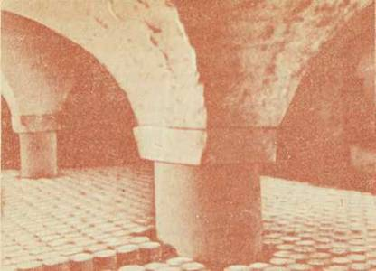
Пещеры Рокфор, где много веков назад началось производство одноименного сыра; они и сейчас используются с той же целью
И сейчас во Франции к рокфору сохранилось особое отношение. Он вырабатывается здесь из овечьего молока. Сыр, сделанный по этому способу из коровьего молока, не должен называться рокфором.
В других странах этот сыр изготовляется в основном из коровьего молока и называется по-разному. В нашей стране он носит название рокфора независимо от того, из какого молока выработан (и делается в основном из коровьего).
Рокфор — оригинальный, единственный в отечественном ассортименте сыр, в котором плесень развивается внутри. Взгляните на его разрез: белое или слабо-желтое тесто, пронизанное прожилками сине-зеленой плесени, создает полное впечатление мраморного рисунка (искусные мастера стараются сделать тесто побелее, чтобы ярче была мраморность). Плесень придает сыру своеобразный перечный вкус и остроту, которая усиливается сравнительно высоким содержанием соли (4–4,5 %) и слабопрогорклым привкусом, вызванным изменением жира. Тесто его нежное, маслянистое, слегка крошливое. Поистине пикантный сыр!
Несмотря на то, что рокфор — сыр древний, давно известный, в нашей стране он не стал продуктом широкого потребления. Непосвященного покупателя отпугивает большое количество плесени, хотя это признак зрелости и высокого качества сыра.
Плесень рокфора — культурная плесень пенициллиум рокфорти, выращиваемая на хорошо выпеченном хлебе. И тот, кто очищает рокфор от плесени, поступает неправильно.
Порошок плесени вносят в молоко или в сырную массу перед укладкой ее в формы. После посолки в каждой головке делают несколько десятков сквозных проколов для доступа воздуха и создания благоприятных условий для роста плесени. Плесень хорошо развивается, заполняя все пространство между сырными зернами и вдоль отверстий, образованных проколами. Ее обычно больше ближе к центру головки. Плесень не только сообщает сыру своеобразный вкус, но и придает нежность консистенции.
В отличие от других сыров рокфор созревает при довольно низкой температуре, в пределах 6–8 °C — примерно такая температура была обычно в пещерах плоскогорья Ларзак. Сыр созревает в течение 2 месяцев.
Рокфор вырабатывают в виде цилиндра диаметром 18–20 и высотой 10–11 см. Он упаковывается сначала в пергамент, затем в фольгу, с обеих сторон которой наклеивается красочная этикетка. Из нее можно узнать, какова жирность сыра (обычно 50 %), дату его выработки и номер завода, где он изготовлен.
«Рокфор»(пл.). Использование рокфора (примерно 30 % в рецептуре) при выработке этого пастообразного сыра придает ему острый, слегка перечный вкус. Острота усиливается повышенным содержанием соли (3,5 %).
В нежное, мажущееся, маслянистое тесто сыра — в основе своей кремовое — включены частицы культуры плесени рокфора, что делает его цвет зеленоватым.
Жирность сыра 50 %, влажность 53 %.
Российский. Этот популярный сыр создан во Всесоюзном научно-исследовательском институте маслодельной и сыродельной промышленности и впервые выработан на Угличском заводе. Появившись на прилавках магазинов в начале шестидесятых годов, он быстро завоевал симпатии потребителей. Производство его стали ускоренно развивать стремясь поспеть за спросом, и в настоящее время вырабатывается свыше 85 тыс. т российского сыра в год — больше, чем любого другого. Крупнейшие сыродельные комбинаты страны — Тихорецкий и Ленинградский в Краснодарском крае, Алейский в Алтайском крае, Выруский в Эстонской ССР — и десятки предприятий меньших масштабов специализированы на его изготовлении.
В чем же секрет его популярности? Прежде всего во вкусовых свойствах, которые действительно своеобразны и присущи только этому сыру. Нежная пластичная консистенция сочетается с приятным сырным слегка кисловатым вкусом, но кисловатость имеет другой оттенок, нежели, скажем, в костромском сыре, и ярче выражена. Вот это сочетание выгодно выделяет российский сыр в ряду многих других. Немалую часть потребителей привлекает и то, что он менее соленый (в нем 1,3–1,8 % соли). Жирность сыра 50 %, влажность 43 %.
Российский сыр имеет цилиндрическую форму. На прилавках магазинов можно увидеть и большой низкий цилиндр его (диаметр до 36, высота до 18 см, масса до 13 кг), и малый (диаметр до 28, высота до 15 см, масса до 9 кг).
В отличие от других твердых сыров, рисунок которых состоит из круглых или овальных глазков, на разрезе российского сыра разбросаны глазки неправильной, угловатой и щелевидной формы.
Сыр поступает в магазины в возрасте не менее 70 дней, причем без разделения на сорта.
«Российский»(пл.). Это типичный представитель группы видовых плавленых сыров, в его состав входят российский сыр (в большом количестве), а также мелкие сыры типа голландского. Дополнительные белковые компоненты — быстросозревающий сыр, вырабатываемый специально для плавления, и нежирный — не имеют специфических вкусовых свойств, да и применяются в рецептуре в незначительном количестве.
Вкус этого сыра, как и сычужного российского, кисловатый, консистенция пластичная, в меру упругая. Содержание жира в нем составляет 45 %, влаги 50 %, соли 2 %.
Русский камамбер. Этот сыр — не новинка в нашей стране: производство его было организовано в конце прошлого столетия по французскому методу, а затем прекращено. И вот камамбер снова на прилавках магазинов.
В круглых картонных коробочках с красочной этикеткой — низкие цилиндрики сыра массой 130 г, разделенные на половинки, завернутые в фольгу. Кремовая поверхность покрыта белыми пятнами подсохшей плесени. Нежный кисломолочный вкус с приятным привкусом шампиньонов. Мягкое, почти мажущееся тесто. Жирность сыра 60 %. содержание соли 1,5–2,5 %. Сыр потребляется вместе с тонкой корочкой, которая придает ему особую пикантность.
В отличие от французского камамбера, который выпускается в возрасте 5, 10, 15, 20 и 25 суток, русский камамбер поступает в магазины молодым, т. е. в возрасте до 10 суток, у него менее острые вкус и запах по сравнению со зрелым сыром.
Как писала однажды «Неделя», к этому сыру нельзя относиться равнодушно: русский камамбер — прекрасный десертный сыр. Он хорошо дополняет как десерт любой и, конечно, праздничный стол.
Салдусский. Его характеризует довольно плотное, даже слегка ломкое тесто. Вкус несколько кисловатый. В нем содержится 20 % жира, до 3,5 % соли. По внешнему виду это прямоугольный брусок длиной до 22 см, массой до 3,5 кг. Поверхность его покрывают парафином. Созревает сыр не менее 45 дней. Вырабатывают его в Латвии.
Северный. Небольшой прямоугольный брусок (длина 15, ширина до 11 и высота до 8 см) массой 0,8–1,3 кг. По сравнению с другими сырами в нем содержится больше жира (55 %) и влаги (45 %); количество соли 2,5 %.
Вкус сыра кисловатый, тесто нежное, слегка мажущееся; на разрезе, рисунок из глазков различной формы, но их может и не быть.
Сыр созревает 30 дней, т. е. относится к группе быстросозревающих. Выпускается в продажу с красочной этикеткой. На сорта не разделяется.
Вырабатывается северный сыр в Белоруссии. Он пришелся по вкусу тем, кто любит сыр нежной консистенции.
«Сказка» (пл.). Сладкий сыр, вырабатываемый из несоленого жирного и нежирного сыра, творога, сливочного масла и сухого молока с сахаром, ванилином, какао-порошком и орехами. У этого сыра сладкий, с выраженными привкусом и ароматом какао и орехов вкус, слегка мажущаяся консистенция, цвет — от светло-шоколадного до коричневого. В нем содержится 30 % жира, 40 % влаги, 25 % сахара.
«Сластена» (пл.). Сладкий сыр, вырабатываемый из несоленого жирного и нежирного сыра, творога, сухого молока и сливочного масла с сахаром, сиропом из жженого сахара, ванилином. Вкус сыра сладкий, молочный с выраженным привкусом жженого сахара и ванилина, консистенция нежная, пластичная, цвет от светло-коричневого до коричневого. В нем содержится 20 % жира, 43 % влаги, 25 % сахара.
Сливочный. Называется так потому, что при его изготовлении применяются сливки. Различают несколько видов — сливочный сладкий, фруктовый (ягодный), советский, острый, рокфор. Если рассмотреть рецептуру этих сыров, то окажется, что большую часть их питательных веществ составляют белок молока и молочный жир, который в данном случае используется в виде свежих и сухих сливок. В зависимости от вида сыра к белку и жиру добавляют сахар и ванилин, фруктовые (ягодные) сиропы или варенья, сыр советский или рокфор, а для острого — перец горький и душистый.
В трапециевидные полистироловые коробочки фасуют по 125 или 250 г сливочного сыра. Открыв крышку с напечатанной красочной этикеткой, вы обнаружите ровную матовую с легким блеском поверхность сыра. Цвет его белый с кремовым оттенком, если это сладкий сыр. фруктовый сыр приобретает цвет добавленного сиропа. Цвет сливочного сыра с рокфором бело-кремовый с сине-зелеными включениями, типичными для этого пикантного сыра.
Сливочный сыр, конечно, не нарежешь — консистенция его нежная, пастообразная, маслянистая. Вкус сливочный, кисломолочный. Сладкий сыр имеет привкус и аромат ванилина, фруктовый — апельсина, малины, клубники или других ягод, острый — черного, красного и душистого перца. При добавлении рокфора или советского сыра продукт приобретает соответственно острый перечный, пикантный или пряный, сладковатый привкус.
Сладкий и фруктовый сыры содержат (в сухом веществе) 40 % жира, советский, острый и рокфор — 50 %. Влажность сыра 55–65 %.
Сливочный сыр — высокопитательный, хорошо усвояемый калорийный продукт. Но у него есть один «недостаток» — он долго не хранится. Поэтому в магазинах и на предприятиях общественного питания его держат при 2–5 °C не более 48–72 ч с момента выпуска.
Сливочные сыры хороши к чаю, кофе. Особенно полюбились они детям. Сливочный сладкий можно смешать дома с вареньем — получится очень вкусное блюдо.
Смоленский. Этот сыр вырабатывают в виде низкого цилиндра диаметром до 14 см, массой до 1,2 кг. Желтовато-оранжевая окраска поверхности, мягкое, слегка мажущееся, маслянистое тесто, незначительное количество глазков неправильной формы. Во вкусе чувствуется острота и легкая аммиачность.
В сыре содержится 45 % жира, до 46 % влаги, 2,5 % соли. Срок созревания 45 дней.
Смоленский сыр завертывают в пергамент, затем в фольгу, на которую наклеивают этикетку. Он вполне может заменить дорогобужский сыр.
Советский. Этот сыр стоит в одном ряду со швейцарским: тот же сладковатый, пряный вкус, своеобразный аромат, пластичное тесто, а на разрезе слабо-желтого цвета круглые или овальные глазки. Как и в швейцарском, в советском сыре содержится 50 % жира, от 1,5 до 2,5 % соли и не более 42 % влаги. Даже большой любитель с трудом отличит швейцарский сыр от советского по вкусу, разве только пастеризация молока вносит свой оттенок. А между тем различия имеются, и довольно существенные.
По внешнему виду советский сыр — прямоугольный брусок со слегка срезанными вертикальными гранями и выпуклыми боковыми поверхностями (верхняя и нижняя поверхности также могут быть слегка выпуклыми). Длина бруска 48–50, ширина 18–20, высота 12–17 см, масса достигает 16 кг. Итак, размеры и масса значительно меньше, чем у швейцарского.
Советский сыр открывает перечень сыров, созданных в нашей стране в период становления сыроделия, преобразования кустарного производства в развитую отрасль пищевой индустрии.
Всем хорош швейцарский сыр, но уж очень много хлопот с ним. По традиционной технологии он вырабатывается из высококачественного сырого молока, которое должно быть доставлено на завод в сжатые сроки — это ограничивает объемы производства сыра, а следовательно, и возможности механизации. Длительные сроки созревания (до 6 месяцев), большие размеры, не совсем удобная форма — все это отнюдь не способствует увеличению производства и широкому распространению швейцарского сыра. А такой сыр высшего класса нужен был в большом количестве советскому народу.
В начале 30-х годов ученые-сыроделы в содружестве с алтайскими мастерами предприняли попытку создать такой сыр, который по вкусовым свойствам был бы подобен швейцарскому и способ производства которого позволял бы наладить его массовую выработку. Так, после опытов на Верх-Айском и Куяганском заводах Алтайского края «родился», по существу, новый сыр.
Сыр этот стали вырабатывать из пастеризованного молока, и это дало возможность сделать чрезвычайно широким район его распространения; прямоугольная форма облегчила производство сыра, уход за ним, хранение и транспортировку. Изменение технологических режимов позволило сократить срок созревания. Если швейцарский сыр может поступить в продажу только в возрасте 6 месяцев, то для советского достаточно 4 месяцев. Сейчас срок созревания этого сыра сокращен до 3 месяцев.
Новый сыр, названный советским, был одобрен и специалистами, и любителями. Хорошую оценку получил он и за рубежом.
Теперь среди крупных твердых сыров советский по объему производства занимает в нашей стране первое место. В отличие от швейцарского его вырабатывают в разных районах Советского Союза, но большей частью в Алтайском крае.
«Советский» (пл.). Сырьем для его выработки служат главным образом крупные сыры — советский, швейцарский, но используются и мелкие — голландский, ярославский, угличский и в незначительном количестве нежирные сыр и творог. Применяется и сухое цельное молоко.
Поскольку основным компонентом этого продукта являются крупке сыры, вкус его сладковатый, слегка пряный; консистенция пластичная, в меру упругая. Жирность сыра 45 %, влажность 50 %, содержание соли составляет 2 %.
Степной. Есть данные, что этот сыр впервые был выработан в степях Западной Сибири в конце XIX в.
Степной сыр имеет более острый и соленый вкус, чем, например, костромской (соли в нем до 3,5 %), кисловатый привкус. Тесто эластичное, ломтик сыра при изгибе ломается. Рисунок состоит из глазков круглой или слегка сплюснутой формы.
Жирность сыра составляет не менее 45 %, влажность не более 41 %. Вырабатывается степной сыр в виде бруска с квадратным основанием (размер стороны 23–24 см), высотой 8–9 см, масса его обычно не превышает 6 кг. Сыр поступает в продажу в возрасте 2,5 месяца.
Столовый. Относится к рассольным сырам, но в отличие от традиционных созревает в основном не в рассоле, а в пленке, на полках хранилищ. Выпускается в так называемом свежем виде — в возрасте 5 дней и созревшим — в возрасте 15 дней.
Вкус и запах сыра кисломолочные, с привкусом пастеризации, он в меру соленый, тесто довольно плотное, слегка ломкое при изгибе, на разрезе могут быть пустоты различных формы и размеров. Жирность сыра 40 %, содержание влаги 50–53 % (в 5-дневном возрасте) и 48–50 % (в 15-дневном), соли — соответственно 1–3 и 2–4 %. Вырабатывается главным образом на Северном Кавказе. На сорта не разделяется.
«Столовый»(пл.). Входит в группу плавленых сыров с пониженной жирностью. Основным белковым компонентом является нежирный сыр, частично используются для плавления сыры голландского типа. Рецептура включает сливочное масло. Вкус и запах сыра кисломолочные, в меру острые, консистенция в меру плотная, упругая.
В сыре содержится 20 % жира, 60 % влаги, 3 % соли. Освоен производством несколько лет назад.
Сулугуни. В западной Грузии и Аджарии сыр этот известен также под названием мингрельский, гваджили и гадазелили. Среди рассольных сыров он занимает второе после брынзы место по объему производства. И это объяснимо. Сулугуни — оригинальный сыр, обладающий своеобразными вкусовыми свойствами. К северу от Кавказского хребта его сейчас вырабатывают больше, чем в Грузии, на его родине. Сулугуни делают в РСФСР, на Украине, в Армении, в Казахстане, в Киргизии, в Таджикистане.
На прилавках магазинов его легко обнаружить. Это небольшие очень низкие цилиндры двух размеров: диаметром до 20 см и высоки до 3,5 см, массой до 1,5 кг — так называемый большой сыр и диаметром до 15 см, высотой до 2,5 см, массой 0,3–0,8 кг — малый.
Вкус сыра очень приятный, кисломолочный, со специфическим привкусом, обусловленным плавлением сырной массы при ее обработке. Сливочные сыры хороши к чаю, кофе. Особенно полюбились они детям. Сливочный сладкий можно смешать дома с вареньем — получится очень вкусное блюдо.
Смоленский. Этот сыр вырабатывают в виде низкого цилиндра диаметром до 14 см, массой до 1,2 кг. Желтовато-оранжевая окраска: поверхности, мягкое, слегка мажущееся, маслянистое тесто, незначительное количество глазков неправильной формы. Во вкусе чувствуется острота и легкая аммиачность.
В сыре содержится 45 % жира, до 46 % влаги, 2,5 % соли. Срок созревания 45 дней.
Смоленский сыр завертывают в пергамент, затем в фольгу, на которую наклеивают этикетку. Он вполне может заменить дорогобужский сыр.
Советский. Этот сыр стоит в одном ряду со швейцарским: тот же сладковатый, пряный вкус, своеобразный аромат, пластичное тесто, а на разрезе слабо-желтого цвета круглые или овальные глазки. Как и в швейцарском, в советском сыре содержится 50 % жира, от 1,5 до 2,5 % соли и не более 42 % влаги. Даже большой любитель с трудом отличит швейцарский сыр от советского по вкусу, разве только пастеризация молока вносит свой оттенок. А между тем различия имеются, и довольно существенные.
По внешнему виду советский сыр — прямоугольный брусок со слегка срезанными вертикальными гранями и выпуклыми боковыми поверхностями (верхняя и нижняя поверхности также могут быть слегка выпуклыми). Длина бруска 48–50, ширина 18–20, высота 12–17 см, масса достигает 16 кг. Итак, размеры и масса значительно меньше, чем у швейцарского.
Советский сыр открывает перечень сыров, созданных в нашей стране в период становления сыроделия, преобразования кустарного производства в развитую отрасль пищевой индустрии.
Всем хорош швейцарский сыр, но уж очень много хлопот с ним. По традиционной технологии он вырабатывается из высококачественного сырого молока, которое должно быть доставлено на завод в сжатые сроки — это ограничивает объемы производства сыра, а следовательно, и возможности механизации. Длительные сроки созревания (до 6 месяцев), большие размеры, не совсем удобная форма — все это отнюдь не способствует увеличению производства и широкому распространению швейцарского сыра. А такой сыр высшего класса нужен был в большом количестве советскому народу.
В начале 30-х годов ученые-сыроделы в содружестве с алтайскими мастерами предприняли попытку создать такой сыр, который по вкусовым свойствам был бы подобен швейцарскому и способ производства которого позволял бы наладить его массовую выработку. Так, после опытов на Верх-Айском и Куяганском заводах Алтайского края «родился», по существу, новый сыр.
Сыр этот стали вырабатывать из пастеризованного молока, и это дало возможность сделать чрезвычайно широким район его распространения; прямоугольная форма облегчила производство сыра, уход за ним, хранение и транспортировку. Изменение технологических режимов позволило сократить срок созревания. Если швейцарский сыр может поступить в продажу только в возрасте 6 месяцев, то для советского достаточно 4 месяцев. Сейчас срок созревания этого сыра сокращен до 3 месяцев.
Новый сыр, названный советским, был одобрен и специалистами, и любителями. Хорошую оценку получил он и за рубежом.
Теперь среди крупных твердых сыров советский по объему производства занимает в нашей стране первое место. В отличие от швейцарского его вырабатывают в разных районах Советского Союза, но большей частью в Алтайском крае.
«Советский» (пл.). Сырьем для его выработки служат главным образом крупные сыры — советский, швейцарский, но используются и мелкие — голландский, ярославский, угличский и в незначительном количестве нежирные сыр и творог. Применяется и сухое цельное длолоко.
Поскольку основным компонентом этого продукта являются крупные сыры, вкус его сладковатый, слегка пряный; консистенция пластичная, в меру упругая. Жирность сыра 45 %, влажность 50 %, содержание соли составляет 2 %.
Степной. Есть данные, что этот сыр впервые был выработан в степях Западной Сибири в конце XIX в.
Степной сыр имеет более острый и соленый вкус, чем, например, костромской (соли в нем до 3,5 %), кисловатый привкус. Тесто эластичное, ломтик сыра при изгибе ломается. Рисунок состоит из глазков круглой или слегка сплюснутой формы.
Жирность сыра составляет не менее 45 %, влажность не более 41 %. Вырабатывается степной сыр в виде бруска с квадратным основанием (размер стороны 23–24 см), высотой 8–9 см, масса его обычно не превышает 6 кг. Сыр поступает в продажу в возрасте 2,5 месяца.
Столовый. Относится к рассольным сырам, но в отличие от традиционных созревает в основном не в рассоле, а в пленке, на полках хранилищ. Выпускается в так называемом свежем виде — в возрасте 5 дней и созревшим — в возрасте 15 дней.
Вкус и запах сыра кисломолочные, с привкусом пастеризации, он в меру соленый, тесто довольно плотное, слегка ломкое при изгибе, на разрезе могут быть пустоты различных формы и размеров. Жирность сыра 40 %, содержание влаги 50–53 % (в 5-дневном возрасте) и 48–50 % (в 15-дневном), соли — соответственно 1–3 и 2–4 %. Вырабатывается главным образом на Северном Кавказе. На сорта не разделяется.
«Столовый» (пл.). Входит в группу плавленых сыров с пониженной жирностью. Основным белковым компонентом является нежирный сыр, частично используются для плавления сыры голландского типа. Рецептура включает сливочное масло. Вкус и запах сыра кисломолочные, в меру острые, консистенция в меру плотная, упругая.
В сыре содержится 20 % жира, 60 % влаги, 3 % соли. Освоен производством несколько лет назад.
Сулугуни. В западной Грузии и Аджарии сыр этот известен также под названием м и н г р е л ь с к и й, г в а д ж и л и и г а д а з е л и л и. Среди рассольных сыров он занимает второе после брынзы место по объему производства. И это объяснимо. Сулугуни — оригинальный сыр, обладающий своеобразными вкусовыми свойствами. К северу от Кавказского хребта его сейчас вырабатывают больше, чем в Грузии, на его родине. Сулугуни делают в РСФСР, на Украине, в Армении, в Казахстане, в Киргизии, в Таджикистане.
На прилавках магазинов его легко обнаружить. Это небольшие очень низкие цилиндры двух размеров: диаметром до 20 см и высотой до 3,5 см, массой до 1,5 кг — так называемый большой сыр и диаметром до 15 см, высотой до 2,5 см, массой 0,3–0,8 кг — малый.
Вкус сыра очень приятный, кисломолочный, со специфическим привкусом, обусловленным плавлением сырной массы при ее обработке. Тесто сыра плотное, эластичное, слоистое, чем он и отличается от всех других сыров.
Привкус плавления и слоистость теста — следствие особых технологических приемов. Полученную из молока сырную массу не укладывают в формы, как обычно, а оставляют в ванне для созревания. За это время в ней накапливается большое количество молочной кислоты. Если затем сырную массу нагреть, она расплавится; если положить в горячий 5 %-ный раствор соли, она начнет растворяться.
Созревшую массу режут на мелкие кусочки и потом плавят, вымешивая и растягивая. Она тянется за мешалкой, как мучное тесто. Отсюда и привкус плавления и слоистость консистенции.
Сформованные головки сулугуни солят и примерно через сутки сыр выпускают в продажу, т. е. в свежем виде, без созревания.
Жирность сулугуни 45 %, влажность не более 50 %, содержание соли не превышает 4 % (т. е. меньше, чем может быть в типичных рассольных сырах).
Сулугуни потребляют как обычный сыр, а также поджаривают на сковороде и даже на вертеле, и тогда на размягченном сыре появляется золотистая корочка и он приобретает своеобразный приятный вкус.
Сусанинский. Это новый полутвердый сыр. Вырабатывается с повышенным количеством закваски молочнокислых бактерий и созревает 15 дней.
Выпускают сусанинский сыр в виде прямоугольных брусков: одни бруски длиной и шириной 11–14, высотой 6–8 см, массой 1—] 1,8 кг, другие — той же ширины и высоты, но длиной 24–28 см, массой 2–3,5 кг. Вкус и запах сыра кисломолочные, слабовыраженные сырные, тесто нежное, однородное, рисунок — в виде глазков круглой, слегка сплюснутой или угловатой формы, но его может и не быть. В сыре содержится 45 % жира, 48 % влаги, 1–1,8 % соли. На сорта не разделяется. Вырабатывается в основном в РСФСР.
«Сыр для макаронных блюд»(пл.). В его создании участвует голубая тригонелла. Экстрактом этого пряного растения ароматизируют сливочное масло, добавляемое в сырную массу при плавлении. Нежное кремообразное тесто приобретает выраженные привкус и аромат тригонеллы и слегка зеленоватый цвет. Жирность 50 %, содержание соли 2,5 %.
Перед употреблением сыр в банке разжижают и добавляют к отварным макаронам, вермишели, рожкам. Получается очень вкусное блюдо.
«Сыр для овощных блюд» (пл.). Вкусовыми добавками при изготовлении этого сыра служат томатный соус «Острый» и молотая гвоздика. Они придают острому вкусу сыра своеобразный пряный привкус, а светло-кремовому тесту розоватый оттенок. Консистенция сыра нежная, кремообразная. Жирность 50 %, содержание соли 2,5 %.
С этим сыром можно приготовить вкусный овощной суп, борщ, подливки к жареному мясу, котлетам, отварной капусте.
Для приготовления супа в подсоленную кипящую воду кладут нарезанный ломтиками картофель или картофель с капустой и варят до готовности. Затем добавляют сыр, жареные лук и морковь и доводят суп до кипения.
На 4 тарелки супа берут 1,5 л воды, 0,5 кг картофеля или картофеля с капустой, 1 головку лука, 50 г моркови, 225 г сыра (одну банку), соответствующее количество масла для обжарки лука и моркови.
Для приготовления приправы банку с сыром помещают в горячую воду и содержимое помешивают ложкой до тех пор, пока сыр не приобретет способность разливаться.
При использовании сыра в качестве соуса для мясных блюд его разводят горячей (кипяченой) водой по вкусу, заливают им поджаренные холодные котлеты и на медленном огне доводят соус до кипения. Котлеты становятся сочными, более вкусными и питательными.
«Сыр с белыми грибами»(пл.). Это, пожалуй, самый оригинальный плавленый сыр. В рецептуре его 16 % занимает грибной отвар и 1,5 % —мелкоизмельченные грибы.
Хорошо выраженный грибной привкус характеризует этот сыр. В нежное тесто вкраплены кусочки грибов.
Из сыра с белыми грибами можно приготовить грибной суп, подливу для картофельных котлет. Таковы рекомендации тех, кто вырабатывает сыр с белыми грибами. Все другие способы его потребления — дело рук хозяйки.
Суп готовят из этого сыра так же, как суп из сыра для овощных блюд. Для получения подливы к картофельным котлетам его разогревают, как сыр для овощных или макаронных блюд, при желании добавляя немного кипяченой воды.
В сыре содержится 50 % жира, 58 % влаги, 2,5 % соли.
«Сыр с грибами для супа» (пл.). Этот сыр вырабатывается не с белыми грибами, а с отборными грибами других видов. Консистенция его более плотная, поэтому он упаковывается в фольгу по 100 г.
В нем содержится 55 % жира, 48 % влаги, 3 % соли.
«Сыр с копчеными мясопродуктами» (пл.). Мясные копчености (освобожденные от шкуры, костей и оболочки) добавляют в расплавленную массу измельченными на кусочки размером 0,5–0,7 см в количестве 10–15 % к массе смеси; содержание сычужного жирного сыра составляет примерно 50 %.
Вкус и запах этих сыров сырные, острые, с выраженным привкусом мясокопченостей. В пластичное, слегка упругое тесто включены частицы их, что определяет и цвет сыра.
Под фольгой поверхность его гладкая, блестящая.
В этом сыре содержится 45 % жира, 50 % влаги, 3 % соли.
«Сыр с луком для супа»(пл.). Во вкусе его хорошо чувствуется привкус лука и специй. Он также имеет сравнительно плотную консистенцию и упаковывается в фольгу.
Основные показатели те же, что и для сыра с грибами.
Сыры с луком и грибами предназначены в основном для приготовления первых блюд, но могут быть использованы и для вторых блюд и для бутербродов.
Для приготовления супа брусок сыра с грибами или луком растворяют в 0,8–1 л кипящей подсоленной воды, заправляют жареным луком и морковью и полученным бульоном заливают отварную вермишель.
Сыр с овощными добавками (пл.). К нему относятся пастообразные плавленые сыры «Перчинка», «Луковичка» и «С петрушкой». При их изготовлении используются свежий сладкий перец, зелень лука и петрушки. В рецептуру входят жирные сыры типа голландского, сыры для плавления и нежирные, а также сливочное масло, сливки, сухое молоко.
Вкус и запах этих плавленых сыров умеренно выраженные сырные, с привкусом соответственно перца, лука и петрушки, консистенция нежная, мажущаяся, с наличием частиц овощных добавок, что сказывается и на цвете.
В сыре содержится 50 % жира, 55 % влаги, 2 % соли.
«Сыр с перцем»(пл.). Для производства его применяют перец душистый, напоминающий ароматом гвоздику и корицу, перец горький и красный. Размолотый перец в количестве 0,3 % вносят в сырную массу в конце плавления.
Количество сычужного сыра — голландского, костромского — составляет около 65 %.
Вкус сыра острый, с ароматом и привкусом перца. Цвет в меру плотного, слегка упругого теста с вкрапленными частицами перца желтый.
Жирность сыра 40 %, влажность 52 %, количество соли составляет 3 %.
«Сыр со специями» (пл.). Измельченные свежие или сухие стебли и листья укропа, сельдерея, зерна тмина, порошок тригонеллы (тот же, что применяется при выработке зеленого сыра) дополняют острый сырный вкус продукта своеобразными хорошо выраженными привкусом и ароматом.
Тесто сыра в меру плотное, слегка упругое, цвет его — зеленоватый, видны частицы специй. Жира в нем содержится 40 %, влаги 52 %, соли 3 %.
«Сыр с томатным соусом» (пл.). Хотя в рецептуре этого продукта больше нежирного сырья, чем в других сырах данной группы, жирность его ненамного ниже (30 %), так как в определенном количестве применяются жирный сыр, сливочное масло.
В расплавленную сырную массу при изготовлении сыра вводят томатный соус «Острый» (3–5 %), представляющий собой смесь томата и ферментативного теста, приготовленного из сои с добавлением различных специй и уксуса.
Вкус сыра острый, слегка кисловатый, с привкусом томатного соуса; тесто плотное, в меру упругое, светлого и интенсивного оранжевого цвета. Влажность 58 %, содержание соли составляет 2,5 %.
Тарм. Это мягкий сыр, вырабатываемый в Армении. По форме представляет собой брусок с размером стороны 13–15, высотой 5–6 см, массой 0,8–1,5 кг. Вкус и запах кисломолочные, тесто нежное, однородное, глазков нет. В нем содержится 50 % жира, 55 % влаги, 1–1,5 % соли. Выпускается в продажу без созревания, в свежем виде.
Творожный сушеный. Творожные сыры изготовляют в Литве с давних времен. Раньше их делали только домашним способом. Теперь предприятия республики вырабатывают такие сыры, и среди них оригинальный творожный сушеный занимает особое место.
При изготовлении этого сыра используют молоко, творог, пахту, сливки, сливочное масло.
По форме сушеный сыр — небольшой трапециевидный брусок массой до 200 г. Вкус его кисломолочный, в меру соленый (до 4 % соли). Этот сыр подвергают сушке, и влажнось его не превышает 33 % (в обычных твердых сырах она более 40 %), поэтому консистенция его по-настоящему твердая, хрупкая, при разрезании сыр может растрескиваться. Жирность его 20–22 % (в расчете на всю массу сыра).
Для реализации творожный сыр либо упаковывают в мешочки, либо завертывают по две штуки в целлофан или полимерные пленки, либо упаковывают в картонные коробки, в которых помещается несколько брусков сыра общей массой не более 1 кг.
Сушеный сыр должен быть реализован в течение 2 месяцев со дня выработки.
Тушинский. Производство этого рассольного сыра распространено в Грузии и на Северном Кавказе. По основным показателям он подобен сыру чанах (см. Чанах). Форма — два усеченных конуса, соединенных широкими основаниями. Масса выпускаемого в продажу продукта 3–6 кг.
Угличский. Так назвали его создатели — ученые из института, что находится в древнем городе на берегу Волги. Этот сыр также имеет свои характерные черты. Вкус его приятный, слегка кисловатый, консистенция нежная, немного ломкая. Глазки на рисунке сыра круглые, слегка сплюснутой или угловатой формы.
Жирность продукта типична для мелких твердых сыров — 45 %, но влажность немного больше — 45 %. Соли в нем содержится до 2,5 %, поэтому острота не так заметна.
Угличский сыр имеет форму прямоугольного бруска со слегка выпуклыми боковыми поверхностями. Длина его до 25, ширина до 13 и высота до 8 см. Масса бруска 2–3 кг.
Этот сыр поступает в продажу в возрасте 2 месяцев. Нередко брусок украшает этикетка, оформленная в древнерусском стиле.
«Угличский» и «Невский»(пл.). Это пастообразные сливочные сыры. Для производства сыра «Угличский» используются в основном мелкие сычужные сыры — костромской, ярославский, голландский, угличский, в качестве жирового компонента — сливочное масло высшего сорта, а иногда и сметана.
Вкус сыра «Угличский» слегка кисловатый, консистенция нежная, маслянистая, немного мажущаяся, цвет светло-желтый или желтый.
В отличие от сыра «Угличский» для производства сыра «Невский» используются крупные сыры — швейцарский, советский, алтайский. В рецептуру входят также полужирный творог и сухое обезжиренное молоко, в качестве основного источника жира — сливочное масло.
Сыру «Невский» передается вкус крупных сыров — слегка сладковатый, пряный.
Консистенция и цвет те же, что и сыра «Угличский».
Содержание жира в сырах «Угличский» и «Невский» составляет 60 %, влаги — 50 %, соли 2 %. Фасуют их в фольгу по 30 и 62,5 г, хранят не более 3 месяцев.
Украинский. Этот сыр имеет форму высокого цилиндра диаметром до 18 см и массой до 10 кг. Эластичное тесто, слегка пряное на вкус, на разрезе — глазки круглой или овальной формы. Содержание жира составляет 50 %, влаги — 42 %, соли — 1,6 %. Созревает он всего 2 месяца. Выпускается в продажу без разделения на сорта.
Парафинированный сыр завертывается в целлофан. Цилиндр украшается тремя этикетками — одна из них опоясывает его посередине, две другие наклеиваются на торцы.
Этот сыр в Украинской республике по объему производства в группе крупных сыров занимает первое место. Сейчас украинский сыр выпускается и в виде низких цилиндров.
«Фруктовый» (пл.). Еще одно необычное сочетание — сыр и фруктовые эссенции, соки или сухофрукты (курага, изюм или кишмиш) как вкусовые добавки.
При выработке фруктового сыра особенно строгие требования предъявляются к качеству творога и нежирного сыра — основных белковых компонентов в его рецептуре.
Вкус этого деликатесного сыра сладкий, с легкой кисловатостью и выраженным привкусом и ароматом лимона, апельсина (цитрусовые добавляются в виде соков) и других фруктов и ягод. Цвет нежного, слегка мажущегося теста зависит от цвета фруктовых добавок.
Жирность сыра 30 %, влажность 35 %, содержание сахара 25 %.
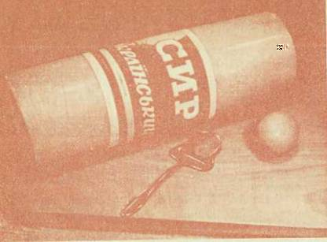
Сыр украинский
Чанах. Типичный рассольный сыр, в большом количестве вырабатываемый в Армянской республике.
Острый, соленый вкус, плотное, слегка ломкое, но не крошливое тесто отличают этот сыр. Необычна и его форма — два усеченных конуса, соединенных широкими основаниями. Чанах вырабатывают и в виде прямоугольного бруска.
Масса сыра 4–6 кг.
Как и всякий рассольный сыр, чанах не имеет корки. Цвет его теста в основном белый, в центре головки желтоватый. На разрезе — глазки различной формы и размера.
Вырабатывают чанах 40– и 50 %-ной жирности. Влаги в нем содержится до 50 %, соли — от 4 до 7 %.
Чанах, как и другие сыры этой группы, созревает и хранится в рассоле не более двух месяцев, иначе в продукте повышается содержание соли, и увеличивается переход полезных веществ в рассол, в результате чего ухудшается качество сыра.
Чеддер. Вряд ли жители деревни Чеддер в Соммерсетской долине Англии могли предположить, что созданный ими сыр получит такое распространение. В настоящее время чеддер в мировом производстве сыра занимает первое место. А в таких странах, как США, Англия, Австралия, Канада, Новая Зеландия, количество его составляет 80–85 % общей выработки сыра. Определилась тенденция к дальнейшему расширению производства чеддера. Технология чеддера проще, чем других сыров, и продукт можно получить более постоянных свойств, что позволяет комплексно механизировать процесс. В некоторых странах заводы, производящие чеддер, — крупные высокомеханизированные предприятия.
Вкус чеддера чистый, слегка кисловатый, незначительно пряный и, как отмечают сыроделы, выраженный сырный. Сыр отличает нежное, пластичное тесто. Рисунка на разрезе нет. В сыре содержится не менее 50 % жира, 1,5–2,5 % соли.
В нашей стране организовано производство этого сыра в значительных количествах — два крупных завода вырабатывают более 4 тыс. т чеддера в год. Предприятия оснащены совершенным оборудованием с высокой степенью механизации и автоматизации процессов. Сыр выпускается в пленке брусками.
«Чеддер» (пл.). Помимо основного компонента — твердого сыра чеддер — в рецептуре используются в незначительном количестве нежирный сыр, а иногда и российский.
Вкус и запах этого сыра выраженные, сырные, слегка кисловатые, пряные, консистенция пластичная, маслянистая, в меру плотная. Жирность сыра 50 %, влажность 49 %, содержание соли 2 %.
Чечил. По внешнему виду этот сыр не имеет ничего общего с любым другим. Он выпускается в виде волокнистых по структуре нитей, связанных в пучок.
Созревает чечил в рассоле, но нередко его смешивают с творогом или другим сыром и набивают в неглазурованные кувшины или бурдюки.
Вкус и запах этого сыра кисломолочные, острые, волокнистое тесто плотное, поверхность продукта шероховатая. Жира в нем содержится до 10 %, влаги — не более 60 %, соли — 4–8 %. Масса одного пучка сыра 3–4 кг.
Вырабатывается чечил в Армении.
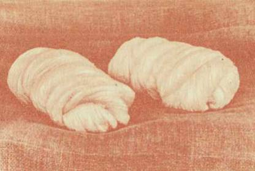
Сыр чечил
Чуйский. Своим названием обязан одноименной долине Киргизии, где он впервые был выработан. По объему производства занимает в республике среди твердых мелких сыров второе место, уступая только голландскому брусковому.
Чуйский сыр подобен голландскому. Вкус его умеренно острый, с легкой кисловатостью; тесто нежное, эластичное. Жирность 50 %, влажность до 43 %, содержание соли не превышает 3 %.
По форме это довольно большой прямоугольный брусок (длина до 28, ширина до 15 и высота до 12 см) массой 4–5 кг. Созревает чуйский сыр около 2 месяцев.
Вырабатывается только в Киргизии. Выпускается без разделения на сорта.
Швейцарский. Огромные круги его диаметром до 80 см, массой до 100 кг, напоминающие мельничные жернова, под тонкой, но прочной коркой содержат пластичную светло-желтую массу, пронизанную крупными — до 1 см в диаметре — глазками с матовым блеском.
А вкус и запах пряные, сладковатые, с ореховым привкусом. Такой сыр — прекрасный десерт.
В нашей стране этот сыр имеет свою историю. С конца XVII! в. дошли до нас сведения о том, что заезжие мастера делали швейцарский сыр в помещичьих хозяйствах, в частности в имении князя Мещерского Лотошине. Но первый опыт организации производства этого сыра на промышленной основе принадлежит Н. В. Верещагину, который, ознакомившись с производством его в Швейцарии, решился на смелую попытку перенести практику горной страны в условия российской лесной зоны. Читатель, должно быть, помнит, что именно он устроил в 1866 г. в селе Отроковичи Тверской губернии первую в России артельную сыроварню. Немалые поначалу трудности не остановили Н. В. Верещагина и его соратников, они продолжали настойчиво осваивать швейцарское сыроделие, и секрет, охраняемый засевшими в помещичьих имениях мастерами-швейцарцами, был раскрыт.
Если история нашего швейцарского сыра началась где-то в XVIІІ в., то история его прародителя — эмментальского сыра — уходит своими истоками в глубину веков. Швейцария лежала на пути распространения сыра за пределы Римской империи, на север, что в сочетании с замечательными природными условиями страны способствовало развитию здесь сыроделия и созданию его шедевра — эмментальского сыра, появление которого относят к XV в.
Прошли столетия, и сыр этот из Эмментальской долины Бернского кантона перешел границы многих стран. Сейчас он вырабатывается не только во Франции, Дании, Финляндии и других европейских странах, но и в США, Канаде, Австралии, а знают его, конечно, везде, где знают, что такое сыр. Такую популярность эмментальский сыр может разделить разве что с французским коньяком и русской черной икрой.
Имеются сведения, что впервые эмментальский сыр появился в России при Петре I как деликатес, завозимый из-за границы.
Распространившись в России благодаря усилиям Н. В. Верещагина, эмментальский сыр, получивший у нас название сначала русско-швейцарского, а затем просто швейцарского, приобрел здесь свой колорит. Еще до революции знатоки ценили русско-швейцарский сыр не ниже, чем эмментальский, который завозили из Швейцарии.
Эмментальский сыр зарубежного производства иногда поступает в магазины крупных городов. Он привлекает покупателей прежде всего пластичной консистенцией. Швейцарский сыр отечественного производства по консистенции, бывает, уступает зарубежному, но вкус и запах его, да и рисунок ничуть не хуже. Однажды в Угличе, в научном центре сыроделия, была организована дегустация швейцарского сыра, кажется, из Армении, и эмментальского из Швейцарии. И хотя эмментальский сыр получил более высокую оценк, за консистенцию, многие специалисты сыроделия и ученые института отдали предпочтение швейцарскому за вкус и рисунок.
Швейцарский сыр сейчас вырабатывается в РСФСР, Армении, Грузии Азербайджане. Первое место по выработке этого сыра занимает Армения.
В производстве сыров самое сложное — производство швейцарского сыра. Свою роль играет и величина его, и требования к вкусу и рисунку. Сделать хороший швейцарский сыр — большое искусство. Не случайно те, кто вырабатывают его, считаются мастерами высокого класса. О том, какую кропотливую работу выполняет мастер только при созревании швейцарского сыра (не говоря уже о всех предыдущих процессах), можно судить по следующему краткому перечню операций при уходе за сыром в хранилище. В теплой камере, где температура 20–25 °C и влажность воздуха 92–94 %, происходит брожение сыра. Чтобы оно протекало нормально, сыр каждые 2–3 дня переворачивают, перекладывают с нижних полок на верхние (или наоборот), моют, чтобы не загрязнялась корка. Когда брожение заканчивается, сыр перемещают в холодную камеру, где температура 10–12 °C и влажность воздуха 87–88 %. Здесь совершаются примерно те же операции, но с меньшей периодичностью. И так в течение 6 месяцев, пока созревает швейцарский сыр.
В готовом швейцарском сыре не меньше 50 % жира (в расчете на сухие вещества), от 1,5 до 2,5 % соли и не более 42 % влаги. Это единственный из крупных сыров, который не покрывают парафином. Слегка шероховатая корка его с отпечатками серпянки (специальная ткань, в которую его завертывают во время прессования), обычно покрыта прочным сухим налетом сероватого цвета.
В некоторых странах этот сыр вырабатывают в виде прямоугольных брусков массой около 40 кг. В Эстонии освоено производство швейцарского сыра такой формы, ему присвоено название эммен-тальский.
Шетский. Вырабатывается в Литве. Содержит 30 % жира, 1,5–2,5 % соли.
Вкус сыра кисломолочный, тесто эластичное. Рисунок состоит из глазков разной формы.
На прилавках магазинов можно найти шетский сыр двух видов: покрытый парафиновой смесью и без корки, упакованный в пленку. По форме сыр — прямоугольный брусок длиной до 30, шириной до 15 и высотой до 12 см, массой до 6 кг.
Сыр созревает 45 дней. Выпускается без разделения на сорта.
«Шоколадный» (пл.). Треугольный, квадратный или прямоугольный брусочек, упакованный в фольгу с яркой этикеткой. Под фольгой — влажная глянцевая поверхность шоколадного цвета.
Сыр имеет вкус и аромат какао и легко намазывается на хлеб. В рецептуру его входит примерно 5 % какао.
В продаже можно встретить шоколадный плавленый сыр с грецкими орехами, которые не только улучшают его вкус, но и повышают питательность. Жирность 30 %, содержание сахара 25 %.
Растворив шоколадный или кофейный сыр в кипятке, получают горячий напиток типа какао или кофе.
Эстонский. Он относительно «молод» — известен с пятидесятых годов. Эстонский сыр можно назвать продуктом высокого качества, полученным при интенсификации производства. Работники Вандрясского завода в Эстонии предложили метод, позволяющий резко сократить продолжительность созревания продукта. И это определило особенность эстонского сыра. Он поступает в продажу в возрасте 1 месяц, и к этому времени степень его зрелости соответствует степени зрелости ярославского сыра двухмесячного возраста.
В основе метода — биологический фактор. В молоко вносят не обычную, а предварительно активизированную закваску и биологический препарат, содержащий комплекс ферментов молочнокислых бактерий. Биохимические процессы в сырной массе протекают значительно интенсивнее, в результате чего быстрее, чем обычно, разлагается белок на простые соединения, хорошо усвояемые организмом человека, и сыр созревает скорее.
Во вкусе эстонского сыра чувствуется незначительная кисловатость, а иногда и легкая пряность. Тесто его пластичное, несколько упругoe. Рисунок составляют круглые, слегка овальной формы глазки. В сыре содержится не менее 45 % жира, 44 % влаги, до 2,5 % соли.
Эстонский сыр изготовляют в форме цилиндра высотой 30–35, диаметром 8—10 см, массой 2–3 кг.
«Янтарь» (пл.). Этот сыр быстро завоевал большую популярность. Он поступает в продажу в белых полистироловых коробочках или в пакетах из фольги, украшенных яркими этикетками.
Сыр «Янтарь» изготовляют из советского, швейцарского, алтайского, российского, пошехонского, костромского, ярославского и других сыров, соответствующих требованиям высшего сорта. В рецептуре eгооколо трети по массе занимают сливки жирностью 35 %. Гомогенизация расплавленной сырной массы (пропускание ее в специальной машине через мелкие отверстия под давлением 140 атм) улучшает структуру продукта.
Сыр «Янтарь» обладает приятным, слегка пряным сырным вкусом с привкусом пастеризованных сливок. Тесто его нежное, маслянистое, мажущееся, светло-желтого цвета. Содержание жира 60 %, соли 1,2 %, т. е. ниже, чем в других плавленых сырах, влажность не более 52 %. По вкусовым и питательным свойствам «Янтарь» не уступает известному у нас финскому сыру «Виола».
Ярославский. Впервые был выработан на Угличском заводе. Это один из немногих твердых сыров, изготовляемых в форме высокого цилиндра. Обычные размеры: длина 25–35, диаметр 8—10 см, масса 2–3 кг.
Форма сыра в виде высокого цилиндра небольшого диаметра удобна и для торговли, и в домашних условиях — его, во-первых, проще нарезать, во-вторых, меньшая поверхность остается открытой.
Вкус ярославского сыра слегка кисловатый, в меру острый, аромат не очень сильно выражен. Тесто его мягкое, эластичное, на разрезе сыра — глазки круглой или слегка сплюснутой формы, но иногда они не обнаруживаются, и в этих случаях сыр, как правило, имеет более нежную консистенцию.
Жирность ярославского сыра 45 %, влажность не более 44 %, соли в нем меньше, чем в голландских сырах (1,5–2,5 %).
Сыр созревает в течение 2 месяцев. Цилиндр его украшается красочной этикеткой.
* * *Здесь рассказано, конечно, не о всех сырах, вырабатываемых в Советском Союзе, но наиболее распространенные представители каждой группы показаны. В кратких характеристиках их отражены требования государственных стандартов и технических условий к каждому из них. Может быть, у того или иного потребителя определилась своя характеристика вкусовых особенностей сыра, который ему полюбился, и она не сходится с приведенной в книге? Ну и что же? Наши вкусы субъективны. Сыров много, и каждый выбирает себе сыр по с в о е м у вкусу. Главное, чтобы они нравились нам, чтобы их было больше на прилавках магазинов.